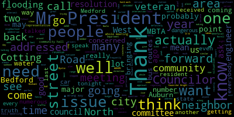

AI-generated transcript of City Council 09-21-21
English | español | português | 中国人 | kreyol ayisyen | tiếng việt | ខ្មែរ | русский | عربي | 한국인
Back to all transcripts
Heatmap of speakers
[Caraviello]: Good evening, everyone. 29th regular meeting of the Medford City Council, September 21st, 2021. Mr. Clerk, please call the roll.
[Hurtubise]: Councilor Bears? Present. Councilor Falco? Present. Vice President Knight? Present. Councilor Marks? Present. Councilor Morell? Present. Councilor Scarpelli? Present. Councilor Scarpelli is absent.
[Caraviello]: Councilor is absent.
[Hurtubise]: President Caraviello?
[Caraviello]: Present. Six in the affirmative, one in the negative. Please rise and salute the flag.
[SPEAKER_15]: I pledge allegiance to the flag of the United States of America, and to the republic for which it stands, one nation, under God, indivisible, with liberty and justice for all.
[Caraviello]: The motion by Councilor Knight to suspend the rules, seconded by Councilor Falco. All those in favor? Aye. Motion passes. Hearings. There is 2, 1, 4, 6, Medford City Council will pull the public hearing in the hall. I would have all the chambers at Medford city hall, 85, George P has to drive method by a zoom on Tuesday, September 21, 2021. Uh, a link to be posted. No way in the Friday, September 17th on a petition from greater Boston donuts doing, doing business as Dunkin' Donuts, Marker floor. 283 Middlesex Avenue Method Mass 02155 for a special permit to amend its hours of operation in accordance with the Method Zoning Ordinance Chapter 94, Section 94 slash 145 to operate extended hours at its business at 283 Middlesex Avenue Method Mass said site being located in a commercial 1C1 zoning district as follows. Extended hours of operation requests is 4 a.m. to 7 a.m., seven days per week. Petition and plan may be seen in the office of the city clerk, room 103, Medford City Hall, MFMS. Call 781-393-2501 for any accommodations. Okay, this is a public hearing. Do we have anyone here that is in favor of this? Do we have somebody from Dunkin' Donuts on the call?
[SPEAKER_12]: Yes.
[Caraviello]: Okay, there you go. Name and address of the record, please.
[SPEAKER_04]: Emily Fitzgerald, 280 Merrimack Street, Methuen, Massachusetts.
[Caraviello]: Thank you. And you are in favor of this?
[SPEAKER_04]: Yes.
[Caraviello]: Thank you very much. Anyone else in favor of this? Hearing and seeing none, we close that part of the meeting. Is there anyone in opposition to this? Anyone in opposition? Hearing and seeing none, we close that part of the hearing. OK. Would you like to give us a brief synopsis on your petition here, on the hours of operation?
[SPEAKER_04]: Yes, we are currently allowed to operate from 7 a.m. to 9 p.m., and we would like to open up at 4 a.m., so the extended hours will be from 4 a.m. to 7 a.m. We did all of the necessary tasks required. We ran in the newspaper. We put out the abutters list, and we were just hoping that this gets approved.
[Caraviello]: and the previous owner had the same hours, correct? Correct. Thank you. Do we have any discussion from the council on this? Okay, hearing and seeing none, do we have a motion to pass this? On the motion by Vice President Knight, seconded by Councilor Bears. Councilor Marks. Yes, Councilor Marks has a question for you, ma'am.
[Marks]: regarding deliveries. Is the hour of delivery is going to change due to this petition?
[SPEAKER_04]: No. I'm sorry. Can I just clarify the delivery for product to our store?
[Marks]: Correct.
[SPEAKER_04]: No, that would not change.
[Marks]: That's going to, it's all going to be the same as it currently exists. Thank you. Thank you, Mr. President.
[Caraviello]: Okay. So on the motion by vice president Knight, seconded by councilor Baez, Mr. Clerk, please call the roll.
[Hurtubise]: Yes. Yes. Yes. Yes. Yes.
[Caraviello]: Motion passes. 2-4, 2-1, 4-6-1, City of Medford notice of public hearing. Medford City Council will hold a public hearing in Howard F. Alderman Chambers at Medford City Hall. 85 George B. Hassell Drive, Medford via Zoom on Tuesday, September 21, 2021. A link will be posted no later than Friday, September 17, 2021, on a petition from Mark Cefalo of 435 Riverside Avenue, LLC, doing business at a Superior Auto Body. to operate an automotive repair and auto body shop class 4 license at 435 Riverside Avenue, Medford, 02155 in an industrial 1 zoning district. Petition and plan may be seen in the office of city clerk, Medford City Hall, Medford, Massachusetts. Call 781-393-2425 for accommodations and aids. With respect to public hearing, is there anyone here speaking in favor of this? Name and address of the record, please.
[SPEAKER_10]: Occefalo, 4 Bridge Street, Salem, New Hampshire.
[Caraviello]: And you are in favor of this? Yes, I am. Thank you very much. Thank you. Is there anyone else in favor? Hearing and seeing none, we motion this part of the hearing closed. Is there anyone in opposition to this? Anyone in opposition? Hearing and seeing none, we close that part of the hearing. I was several of you like to come up and give us a brief description of of your business.
[SPEAKER_10]: Business in Medford I bought the previous owner John who's been a long-term owner of the business for last 30 years I purchased his business all employees and looking to keep the business is there as a staple in town and continue to grow it and keep it going.
[Caraviello]: Thank you does anyone have any questions for a simple. Okay, on the motion by Councilor Falco, seconded by, seconded by Councilor Bez. Mr. Clerk, please call the roll.
[Hurtubise]: Councilor Bez? Yes. Councilor Falco? Yes. Vice President Haynes? Yes. Councilor Marks?
[Caraviello]: Yes.
[Hurtubise]: Councilor Morell?
[Caraviello]: Yes.
[Hurtubise]: Councilor Scarpelli is absent, President Quirio?
[Caraviello]: Yes, 6 in the permanent one absent. Thank you for opening a second business and keeping all the employees and creating some jobs. Thank you very much. Thank you. We are suspended. That's where we are right now. Petitions 21544 petition by Michael. Morello from for a clear channel up to 86 Maple Street stone him. Mass so to want to wait to to replace the existing digital bit. Digital billboard faces at one 62 this to give you is is Michael Morello here. Okay, Mike are you there. It's a click and you want to make more more more. Hello. Good evening. Good evening. Mister Murrow, could you give us your name and address for the record, please?
[SPEAKER_17]: Good evening. Mike Morello, Blair Channel Outdoor, 89 Maple Street, Stono, Mass.
[Caraviello]: Mike, can you give us a brief description of the petition here of what you're doing to replace the billboard base?
[SPEAKER_17]: Yes. Since 2010 approximately, we've operated a digital billboard of 162 Mystic Ave. and we're simply asking permission tonight to replace the digital billboards since they outlive their useful life.
[Caraviello]: Okay. Do we have any further questions on that? Councilor Morocco.
[Morell]: Brightness is the previous screens.
[SPEAKER_17]: There'll be no brighter, just be clearer and more efficient.
[Morell]: Okay. Thank you.
[Knight]: Thank you. Thanks. President Knight. Mr. President, I see this as nothing more than a betterment, and I move for approval. Okay.
[Caraviello]: Any further questions on the petition? Okay, hearing and seeing none, we have a motion on the floor.
[Unidentified]: Second.
[Caraviello]: Who made the motion? Councilor Knight. On the motion by Vice President Knight, seconded by Councilor Bears. All those in favor? Aye. Motion passes. Thank you, Mr. Morello. Thank you. 21545, the petitioner has asked to table that until next week. Communications from the mayor. Do we have a motion to table 21545? Motion by Vice President Rice, seconded by Councilor Bears. All those in favor? Motion passes the table until next week. Communications from the mayor, 21546, September 8th, 2021, to President Caraviello and all members of the city council. From Mayor Brianna Longo-Curran, RE food truck permitting. Dear President Caraviello and members of the Medford City Council, on behalf of the below entity, I respectfully submit to the Medford City Council the following request for a food truck permit to the city of Medford. In addition to the city council approval, vendors are required to adhere to the Board of Health department food safety requirements. So, it would be a Barnby food truck and the event would be at the Brooks Elementary Fall Festival fundraiser. The date would be October 17th, 2021 from 11 a.m. to 4 p.m. and the location would be at the Brooks Elementary School. Thank you for your consideration. Request to be submitted, Mayor Breanna Lungo-Koehn.
[Knight]: Mr. President, this is commonplace. Blond Me has been there now for, I think, seven consecutive years. That is correct. The Brooks FallFest has been a very successful event in the community. Move for approval.
[Caraviello]: On the motion by Vice President Knight for approval, seconded by Councilor Falco. All those in favor?
[John Sardone]: Aye.
[Caraviello]: Motion passes. Thank you very much. 2-1, 5-4-7. Budget amendments. Dear Mr. President and City Councilors, I respectfully request and recommend that the City Council approves the following amendment to the fiscal year 2022 budget. Line item 1 0 1, 1, 5, 1, 5, 0, 3, 2 contract legal services. Fiscal year 2022 budget amount was $26,600. Proposed amended amounts $81,600. Following the passage of the fiscal year 2022 budget by the council. I engaged in conversations with Council President Caraviello, City Solicitor Kim Scanlon, and KP Law to develop a process where the council can avail themselves to KP Law services and Councilors needed. In those discussions, it was agreed that the request of the council attendance or advice will be submitted through the council president, who will coordinate with the city solicitor and KP Law to get whatever legal resources I needed to address the City Council's request. Respectfully submitted, Mayor.
[Knight]: Motion to refer to Committee of the Whole, Mr. President.
[Caraviello]: The motion by Vice President Knight to refer to a Committee of the Whole. Seconded by? Second. Seconded by? Councilor Marks. All those in favor? Aye. Motion to table to a Committee of the Whole. Okay, 21548, September 10th, 2021. Personnel loadings, dear Mr. President and councilors, I respectfully request or recommend that city council approve the following amendments to the revised ordinance entitled, Personal Act Article II, Classification and Compensation Plan, section 66-33, entitled, Officers, Employees, Non-Union Adopting by Adopting the Following Changes. Amendment A, The language of CAF 11 shall be amended to include the following position, assistant purchasing agent. Amendment B, the language of CAF 12 shall be amended to include the following position, land use planner. Amendment C, the language of CAF 13 shall be amended to include the following position, MCM station manager. Amendment D, The language of CAF 3 shall be amended to include the following position, MCM production coordinator. Please note that the above included positions are those that have been discovered to have been created previously, but not included within the compensation plan. Additional positions may be added to the existing compensation plan following the upcoming compensation plan salary study being undertaken by the city through the community compact grant program. We respectfully submitted Breanna Lungo-Koehn, Mayor. Good evening. Name and address of the record.
[Nina Nazarian]: Good evening. Thank you, Mr. President. Good evening, Council members. Nina Nazarian interim chief of staff representing Brianna Mayor Breanna Lungo-Koehn.
[Caraviello]: Welcome to your first meeting.
[Nina Nazarian]: Thank you very much. I appreciate the council taking up this matter this evening. We have, as you know, for four positions which we would like to include on the CAF, also known as the CAF. that the council approves. I'm happy to take questions on any of them and speak to each of them to the extent that the council would like me to do so.
[Caraviello]: Thank you. Do we have any questions for the chief of staff?
[Bears]: Thank you, Mr. President. Welcome to the meeting. Thank you for the work that you're doing. I just wanted to ask, I know that one thing that was committed to by the administration over the summer was coming to the council with CAF updates and reviews to make sure that it aligns with the current positions that actually exist in the city. So my two questions are, I think you just answered the first one, but I'll ask it again. These are positions that have existed for a significant period of time, but were never included in the CAF, is that correct?
[Nina Nazarian]: That is my understanding, yes.
[Bears]: And are there additional positions that you expect to bring to the council in the future that have existed for a significant period but weren't in the CAF ordinance?
[Nina Nazarian]: Councilor Bears, I'm racking my brain right now going through the positions that we have posted, but I would have to review that question to be able to provide an accurate answer.
[Bears]: Okay. Thanks. And I'd appreciate an email.
[Nina Nazarian]: Certainly.
[Bears]: Thank you.
[Caraviello]: Vice President Knight? Mr. Vice President, if you could put your mic on, please.
[Knight]: Okay, there you go. Thank you. Are all these positions filled?
[Nina Nazarian]: At this time, the only position on this list that is filled, as far as I have understood, is the MCM production coordinator, the last position. We are presently working through filling at least two out of the three that are on this list, if not three out of three. It would be, obviously, just to follow up on that, it would be very important to be able to process these to allow the hiring process to occur, so there's no delay in the staffing for these departments.
[Knight]: Have these positions been filled during the current administration and they've become vacant, or are these new positions that you're trying to create?
[Nina Nazarian]: My understanding, and I cannot be... In fairness, I cannot say this with 100% certainty because I've only worked for the organization for the last year, but my understanding is that these positions have become vacant during this current administration and not prior to and not filled during, but I certainly defer to. the PDS director, Alicia Hunt, if she has any further information. What? Excuse me. I defer to the current PDS director, Alicia Hunt, if she has further information or any corrections to my understanding.
[Hunt]: If I might. Good evening name and address of the record please, Alicia hunt director of planning development and sustainability for the city. The land use planner position is the one that has been filled by any street men, and she just left us in June, to take a consulting position. looking at the CAF system, we found that there were no planning positions listed in the CAF other than the director position. So while there were in previous budgets listed on budget sheets, the actual CAF spreadsheet did not list Annie's position or any other planners. So that is what this position is. The MCM station manager is the one where we just lost our station manager, obviously. So it was filled during the pandemic and is a recent vacancy. And actually, I believe that the assistant purchasing agent, if I might, I believe was Fiona's position until she was promoted during the pandemic.
[Ducey]: Hold on.
[Bears]: Thank you. Just how long was Annie Streetman in that position?
[Hunt]: at least two years, maybe three.
[Bears]: Okay, but prior to this administration.
[Hunt]: Absolutely.
[Bears]: Thank you.
[Knight]: And lastly, the caps that are presented to us this evening. Is that the rate of pay that they would produce positions with previously paid? Or are there any adjustments that have been taking place with the offerings that have been made this evening?
[Nina Nazarian]: I can speak to the land use planner and confirm that that is within the range, that it is within the CAF that the prior position was paid. And I can also confirm that, and I actually have to look into the assistant purchasing agent, the MCM station manager and the MCM production coordinator. I don't want to misspeak.
[Knight]: So, we don't know if the positions that you're bringing before us this evening are upgrading the salaries of the titles.
[Nina Nazarian]: If the council would be so agreeable, I can find that information this evening. If you're willing to hold this matter and return to it, I'd be glad to find that information and and provide you the accurate
[Caraviello]: So, any further discussion? Councilor Marks.
[Marks]: Have any of these positions been posted?
[Nina Nazarian]: They have.
[Marks]: All positions?
[Nina Nazarian]: The assistant purchasing agent has been posted and is being, we are in the present process of attempting to fill that position. The MCM station manager is being finalized in the interview process right now.
[Hunt]: land use planner? It's posted. We're trying to circulate it. There is a hot demand for planners right now to get applicants. So it's posted, but we're just in the very beginning trying to get the word out.
[Nina Nazarian]: And MCM production coordinator already filled existing positions.
[Marks]: So is it the intent of the administration not to fill the position until the CAF is created?
[Nina Nazarian]: Certainly, that would it would be the goal would be to establish the calf this evening, and then fill the position so that there's no delay because with the hiring process as you can imagine and as I'm sure we've all been through in our, in our own lives. quickly and communicating in a way that provides a speedy and consistent process is critically important, especially in this time where it is very difficult to fill positions because of the number of positions open across the country and, you know, wanting to ensure that we are able to fill with the successful candidates and the wonderful interviews we've had.
[Marks]: Right. But we just, uh, I think it was your recommendation to lay it on the table for one week. So it's not going to be approved tonight.
[Nina Nazarian]: No, sir. Um, my, my recommendation was to, if the council were to be so willing to allow me to find the information this evening and come back to the council this evening and, uh, present the information so that the action can be taken this evening.
[Marks]: Come back to that. That's not the way I understood it. So, um, that's up to the council. That's not the way I understood it. Mr. President, my apologies. That's up to the council council.
[Falco]: Thank you, Mr. President. Just had a quick question. So what's the range for CAF 3? Do you know the actual ranges?
[Nina Nazarian]: I can also collect that information and bring that to you as well. I can bring all of them.
[Falco]: If you wouldn't mind, if you could get the ranges for each of these CAFs, we'd greatly appreciate it. I'd be happy to do so. Thank you very much.
[Caraviello]: Any further questions for the Chief of Staff? We have motion, Councilor Rao.
[Morell]: I think following on Councilor Falco's point and understanding there is continued work in this, if perhaps the next time, you know, when these are presented again, the salary ranges could come with it so we can have more information.
[Nina Nazarian]: Absolutely. That's great feedback. Thank you. I will be sure to include that information in future papers. Thank you.
[Bears]: Mr. President, just if I may, to my fellow Councilors, I think we're back to requesting to be turned on on the microphone. So when you press the button, you'll have to wait a minute for, I think it might be Cat turning them on right now, actually. I was confused for a second.
[Caraviello]: Okay. Do we have any further questions for the chief of staff?
[Bears]: I second Councilor Knight's motion.
[Caraviello]: Okay. So we have a motion on the floor by Vice President Knight. So on a motion, Is this, Councilor, is this the table or to approve it? Okay, till later in the meeting?
[Marks]: Right, right, just motion and table.
[Caraviello]: Okay, so on the motion by Vice President at the table, seconded by? Second. Seconded by Councilor Bears. All those in favor? Aye. Motion passes.
[Marks]: Thank you, Council Member.
[Caraviello]: Do we have anything else under suspension while we're here?
[Marks]: Mr. President?
[Caraviello]: Councilor Marks.
[Marks]: Thank you, Mr. President. I believe we have a number of residents that would like to speak on a community issue, Mr. President. On the public participation? Yes. Thank you.
[Caraviello]: Councilor Morell.
[Morell]: We have a number of students here for 21-525. I know they're here to speak as well, and it's on the agenda.
[Caraviello]: What number was that? 21-525.
[Bears]: Mr. President, there was also one more communication from the mayor, 21-549.
[Caraviello]: Oh, I'm sorry. I didn't see that. All right, let's do the communication from the mayor first before we do. Still here. Okay. 2-1. to 1, 5, 4, 9, to President Caraviello and all members of the Medford City Council, from Mayor Brian LaTrente. Our Community Preservation Committee requests for housing reserve appropriation. Dear President Caraviello, members of the Medford City Council, on behalf of the Community Preservation Committee, I respectfully request and recommend that your Honorable body approve the following recommendation of the Community Preservation Committee, requesting the appropriation of $355,000 from the housing reserve to Medford Community Housing for the creation of three new affordable units on Fells Bay West. The project will be tracked in community preservation funds by the category housing reserve. Thank you for your consideration. I respectfully submit it. Mayor Brianna Lundgren. Do we have some mayor that wants to speak on that? Good evening, Madam Chief of Staff.
[Nina Nazarian]: microphone to follow. Thank you. Good evening again, Mr. President and council members. Uh, this matter, we have Danielle Evans, the housing planner and CPC coordinator on the zoom call this evening. And we also have in the audience, Susan Collins from Medford community housing. I defer to them.
[Caraviello]: Okay. I referred to that. Mr. Clark, can you want to mute Danielle, please? I didn't, I didn't yell a name and address of the record, please. Hold on one second. We didn't unmute you. Okay, good. Good evening, Daniel. Name and address of the record, please.
[Evans]: Hi, Daniel Evans, Community Preservation Coordinator, Housing Planners 79 Coiville Road. We have a request from Metro Community Housing to increase the original appropriation by an additional $355,000. This is for the three the creation of three affordable units on Felsway West. This has been in the works for several years. They experienced some delays due to some questions with HUD, but they worked it all out. The home consortium has committed $810,000 to this project as well. And I believe that Susan Collins, the executive director of Medford Community Housing, is in the chambers this evening, and she could speak to the specific details of the project.
[Caraviello]: Name and address of the record, please.
[SPEAKER_09]: I represent, I mean, the executive director of Medford Community Housing, and we're located at 32 Cotting Street in Medford.
[Caraviello]: Do we have any questions for
[SPEAKER_09]: That's a good question. It's going to be 705 707 Felsway West and then they'll be numbered by apartments is what I'm understanding so far.
[Knight]: Is this district appropriately zoned for multifamily housing?
[SPEAKER_09]: No, we went through the variance process through the zoning board of appeals and that was approved.
[Knight]: Excellent. Application, Mr. President, I move for approval.
[Bears]: Thank you, Mr. President. Susan, it's great to see you. Thanks for being here. I'm a very close neighbor at 625 Fellsbite West, and I'm really excited that this project is moving forward. And I also just want to thank Danielle Evans. It's great to see that this funding is not sitting in the housing reserve, but is going to the essential need of approving more affordable housing in our community. Thank you.
[Caraviello]: Thank you, Council Member Raul.
[Morell]: Thank you, Mr. President. Thank you, Susan, for being here. And remind me, it's been a while since I've seen the plans for this, but it is three units within a multifamily, correct? It's not?
[SPEAKER_09]: Yes, so it's a separate structure within the attached breezeway to the existing two families.
[Morell]: Okay, and this has been, as you said, this has been in the works for quite a while.
[SPEAKER_09]: Yeah, my hair is getting whiter and whiter as I've gone through specific tests. It's been quite a while.
[Morell]: Okay, great, thank you.
[Marks]: Mr. President. Councilor Marks. Thank you, Mr. President, and I want to thank Susan for all her work in our community. You do great work, you and the community housing group. Susan, roughly, how many affordable units have been created through CPA funds to date?
[SPEAKER_09]: So, this will be the first one that I'm aware of these.
[Marks]: So, these are the first three since we enacted CPA Many Preservation Act and these are the first three affordable units.
[SPEAKER_09]: Right. That have come online. The funding, the first funding round for this.
[Marks]: First, first funding. Um roughly and I don't want to put you on the spot but how many affordable in the city of Medford. Do you have any idea?
[SPEAKER_09]: Through our organization or?
[Marks]: Yours and if you happen to know the city numbers, that would be great.
[SPEAKER_09]: That's kind of a tough question just for another project because there's private development and then we are, as far as I know, the only ones doing strictly affordable units. All the units here will be affordable.
[Marks]: Okay. So, how many is your organization?
[SPEAKER_09]: So, we're we did two for Boston through a co-development with West Medford Baptist Church. We've purchased two condominium units and we have a two family and then these three units.
[Caraviello]: If you could speak into the mic. I'm sorry.
[SPEAKER_09]: Sure.
[Caraviello]: Thank you.
[SPEAKER_09]: So, we did two with the joint partnership with the West Medford Baptist Church and we have two
[Marks]: Okay. And where are those located, Susan?
[SPEAKER_09]: So, the two family with the West Medford Baptist Church is on Boston Avenue. We have a condominium unit at 297 Main Street. We have another condominium at 305 Riverside Avenue and then the two family at 705 707 Felsway West.
[Marks]: Okay, and where was the previous one? I didn't get that.
[SPEAKER_09]: Probably to the 305 Riverside and then these three units hopefully.
[Marks]: Right. And does your organization look at property location when we establish affordable housing in the community? Are we looking to make sure that every neighborhood gets affordable housing and they're not just centralized in certain areas?
[SPEAKER_09]: Right. If you look at our portfolio, we are spread across different neighborhoods in Medford. So, um, It is a priority of us to be in different neighborhoods. They're smaller projects. We try to make them fit into the community and we want them to be part of the neighborhood for families and children and going to school. So, we feel that smaller projects are, you know, more beneficial to families. especially with the children, being able to be part of the neighborhood and develop friendships.
[Marks]: So that is a factor you look at locations to make sure they're dispersed throughout the community.
[SPEAKER_09]: And also geographic equity so that they're not all centered in one area. Right.
[Marks]: Right. Thank you very much. Appreciate your work.
[Falco]: Thank you, Mr. President. And thank you very much for all your hard work on this. Can you talk a little bit about the timing of this as far as when people would actually be living in these units?
[SPEAKER_09]: sure um so we'll start construction uh the maximum we're expecting is 12 months during that process we have to go through the state uh local action unit application and so we have to go through that process once we hopefully get the funding and then we will start the lottery process. Usually we do it about six months out before completion and the reason for that is we don't want to lose people that maybe would qualify and then could drop out or so we try to do it as close as we can to the completion.
[Falco]: So that'll be 12 months from hopefully yeah perfect and as far as the uh is there designated parking for this for these units or is it
[SPEAKER_09]: There is, there's on-site parking, there's street parking, they're right on 28th. Okay.
[Caraviello]: Yes. Great, thank you very much. Thank you for the discussion. So on the motion by Vice President Knight, seconded by?
[SPEAKER_10]: Seconded.
[Caraviello]: Seconded by Councilor, by Councilor Marks. Mr. Clerk, please call the roll.
[Hurtubise]: Council Fares.
[Caraviello]: Yes.
[Hurtubise]: Council Franco. Yes. Vice President Knight.
[Andrew Castagnetti]: Yes.
[Hurtubise]: Councilor Marks? Yes. Councilor Morell?
[Caraviello]: Yes.
[Hurtubise]: Councilor Scarpelli is absent.
[Caraviello]: President Rivera, please. This is 21-525 offered by Councilor Morell, being so resolved that the City Council advance discussions on resolution 20-078, the proposed polystyrene ban first brought before the Council in February 2020. Councilor Morell?
[Morell]: Thank you, Mr. President. Yeah, as it says, this came before the council, was voted into committee of the whole shortly before the pandemic, obviously because the restrictions of the pandemic and other things like the plastic bag ban being temporary lifted, this was kind of put on pause. Of course, the detriment of polystyrene packaging does not stop for the pandemic. And of course, because of increased takeout, this amount of waste has increased, so I know there's a number of students here that can speak on it. I'm just asking for this to be advanced and moved to Committee of the Whole so that we can bring all parties interested to the table and have a great conversation around this and see how we could possibly move forward. But I'd also want the students who came out to have a chance to speak when they can.
[Caraviello]: Thank you. Somebody, let's speak. Good evening. Name and address on the record, please.
[SPEAKER_12]: Ellie Hunt, 41 Watson Street. I am here on behalf of the community and the CCSR, which is the Center for Citizenship and Social Responsibility, Medford Public Schools organization, focused on student leadership and making the community a better place. We are sponsored by the Crystal Campbell Community Development Project and the Cummings Foundation. And with me are more students from the CCSR and other community members who are in support of the limiting use of polystyrene. So I came before the committee February 2020, which was about two years ago with this Medford High graduate Jules Franks, and we spoke on the detrimental environmental effects of polystyrene, also known as styrofoam. At that meeting, this effort was approved to move forward and referred to the Committee of the Whole. Due to the pandemic and the unfortunate timing, that committee was never held and this motion was never moved forward. So I'm here today to bring forward and remind you all of our support on our petition. There's 1,223 signatures supporting this. We hope to limit the use of styrofoam citywide. Doing so will benefit the environment and our community. One of the main prior concerns of this was the impact on the Medford public schools because of the styrofoam trays used at lunches. As of right now, all public schools, all Medford public schools except for Medford High are using reusable trays. And there is a city grant for a commercial dishwasher and reusable trays for the Medford High that the city has acquired. So that should no longer be a factor in this decision. We are here because we can't let this sit forever, and we would respectfully request that you hold a meeting to address this issue. Thank you.
[Caraviello]: Thank you very much.
[SPEAKER_12]: Do you have any questions?
[Caraviello]: Do we have any questions for the young lady? Thank you. And if you could also bring in the Chamber of Commerce in this, where they represent many businesses that use this product, if you want to link them in with your program, that'd be great also.
[SPEAKER_12]: Okay.
[Caraviello]: Okay? Thank you very much.
[SPEAKER_12]: Thank you.
[Caraviello]: So do we have a motion on the floor? We are on the motion by Councilor Morell to refer to Council Committee of the Whole, seconded by Councilor Falco. All those in favor? We're going to, it's in committee.
[Morell]: It's already in committee. Have a meeting on it and I'll do urgency.
[Caraviello]: So on the motion by Councilor Morell, seconded by Councilor Falco. All in favor? Aye. Motion passes. Council Member Mox, you had something under suspension.
[Marks]: Residents here that would like to speak under public participation.
[Caraviello]: Under public participation. Would anyone like to speak under public participation? Good evening. Name and address for the record and the topic you'll be speaking on.
[SPEAKER_32]: My name is Brianna Durham. I live at 105 Brookings Street. and I'm here to speak about the administrative leave of Michael Durham. Good evening, President Caraviello and members of the Medford City Council. My name is Brianna Durham. My husband is Medford's Veterans Services Director, Michael Durham. I thank you for your attention and ask that you listen to me not as a wife, even though I am proud to be Mike's wife, But if you hear my words simply as a wife, it would demean my words and it would demean me. It would be like patting me on the head and saying, thank you, little girl. Instead, I ask that you listen to me as an independent woman, listen to me as a resident of Medford who wants you to know the truth. First, the wage issue. At Mike's budget hearing, every one of you were told by the former chief of staff the city paid the so-called chief people officer for work that was done by Mike during the fiscal year that ended in 2020, in July of 2020. This has never been corrected, and Mike has never been paid in full. But Mike never cared about the money. As usual, he only cares about what's right. What you don't know is that about one month ago, Michael made a public records request to the city asking for documents. In particular, a document from October, 2020 that we feel shows the city knew that the payments made to the chief people officer were fraudulent. The city has refused to reduce the record twice. And this has left Mike with no alternative, but to have his lawyer requested the court order the city to release the public record. as to veterans benefits. Every one of you know Mike has spoken out repeatedly about the administration's policies that will result in reducing veterans preference and civil service hiring. You may also know the mayor in a video that she released online called Mike a liar. Not one to be deterred, in early September Mike spoke out publicly at a veterans benefits rally against this discrimination. He was exercising the very right of free speech that he defended at the risk of his own life. What you may not know is that the chief people officer on behalf of the city of Medford is scheduled to speak at a state commission meeting on September 24th, 2021, when it continues its discussion of veterans benefits and civil service. For many weeks, Mike has been asking the chief people officer to share what he intends to say at the meeting. The chief people officer has never once had the courtesy to respond to Mike. Last Thursday afternoon, Mike saw the chief people officer on the second floor of city hall. It was right after Mike had finished some ticket hearings. Mike asked him to share what he intends to say at the meeting. The chief people officer refused to do so, saying he should ask the mayor and slammed the men's room door in his face. Mike did as he was directed and went right across the hall to the mayor's office and the outer office where the secretary sit. The mayor's door was open and the mayor was at her desk at the end of the office away from Mike. Mike asked her if she could share what the chief people officer was going to present at the civil service meeting. The mayor refused to speak to him saying that he was represented and slammed the door as she retreated into the chief of staff's office. Mike immediately filed a written report with the city solicitor describing how the refusal of the mayor and the chief people officer is negatively impacting his ability to do his job as veterans director. This was his fourth hostile workplace complaint. On Friday morning at 8.30 a.m., Mike emailed this council once again, raising the matter of payments made by the city to a person who did not do the work. No one disputes that the work was done entirely by Mike. Four hours later, Mike was ordered to go up to the interim chief of staff's office and was placed on administrative leave and told that he had to have a fitness for duty examination. He was told that this was not a disciplinary matter, but he was being banned from all municipal buildings. This was done even though Mike's behavior at the meeting was described as being the perfect gentleman, very professional and extremely polite by the two police officers that the mayor had called to city hall to walk Mike down to his office and out of the building. Both officers have also said to Mike's lawyer that there was no need for them to be there. There have been no incidents to warrant such actions on the mayor's part. In my opinion, this is not a personnel issue. It is retribution against Mike for reporting an injustice. And it is an attempt to silence Mike for being honest. The mayor is using a vicious stereotype that veterans are imbalanced and violent to smear the reputation of a good man, a kind, and caring professional who has served his country, who serves the veterans and their families, and who serves this city. The collateral damage to the administration's vile and depraved action against Mike is that the veterans and their families will not be receiving the assistance that they need and deserve. There are some words that each of you need to be reminded of. They were said at Mike's budget hearing. Councilor Knight said, Mike is doing a great job. His department heads go, he is at the top of the list. Councilor Marks said, Mike has taken this position to a different level. Councilor Morell said, Mike has done a tremendous amount of work for a one person office. Councilor Scarpelli said, my question is, how do we make sure someone as valuable as Mike stays? if only we could clone Mike. Councilor Falco said, Mike is doing a fabulous job. Councilor Bears said, Mike's budget doesn't reflect the millions of dollars that he has raised to help veterans. The amount that it has increased is truly impressive. Councilor President Caraviello said, Mike is doing a great job for veterans and for the citizens of this city. even former chief of staff, David Rodriguez said, I've never seen someone step up like Mike. Because each of you said these words, you know that Mike did not abandon his job. He would be on the job this very minute, if not for politically motivated smear campaign, falsely dressed up as administrative leaf. Here are the next words that I respectfully ask this council to say in a formal vote. Be it resolved that the mayor of the city of Medford immediately rescind her order of administrative leave from Michael Durham and return him to his position as veteran services director in the city of Medford without restriction. Thank you.
[E3nlU10YCrs_SPEAKER_04]: Edward Lendingham, 64 Forest Street, Method Mass. I'd like to thank this council for letting me speak tonight. I am a U.S. Navy veteran. From the city of Medfords Department of Public Works for over 37 years of service. I come here tonight to speak on the issues concerning veterans of this community, the veterans department at city hall and issues pertaining to our veterans service officer. The administration has some concern and failures in terms of flag etiquette, procedures at public events and veterans memorials. They failed to apologize for any of these discrepancies and furthermore, continue to assault on veterans by undermining veterans benefits with a civil service veterans bypass request to the state. They refuse to admit that they are legally screened out method residents who apply for city employment. or that selective service request would be bypassed, dozens of non-resident veterans creating a precedent for hiring policies to bypass veterans benefits forever. The diversity director who will be appearing to speak on veterans benefits to the State Civil Service Commission this month, refuses to let veterans know what this administration will state. The veterans want to move, this administration wants to move diversity in another direction in this city. The alleged hostile work environment forced a female minority department head to leave her position. It also put the director of our veterans department, who is a disabled army combat veteran, on paid administrative leave. This action shuts down our veterans department that provides emergency support to veterans and widows in our community. The administration has discriminated based off sex, race, and veteran status over the last eight months. What protective group is next to be discriminated against in the guise of diversity? Is this administration thinks by putting the veterans director on administrative leave can silence the veterans community? You are mistaken. Thank you.
[Caraviello]: Good evening, name and address of the record, please.
[E3nlU10YCrs_SPEAKER_32]: Betsy Lister, 12 Ross Street. Thank you very much, President and council members for allowing me to speak. I'm sorry. COPD, I have to take this down so I can speak. I was working with Michael Durham. He's a longtime customer of mine, and I've known the whole family for a number of years. I want to call him a gentle giant. I'm the wife, or ex-wife, of a 100% PTSD Vietnam veteran service-related disabled. We divorced in 94, and in 2005, I took him back so I could care for him and become his caretaker. In the past two years, he's had seven episodes that I have saved his life. And one was yesterday when I had to call 911 and have an ambulance come and rush him to the VA in West Roxbury. I was working with Michael John to try and get my husband situated in a VA facility because I am not in a position to care for him anymore because I'm not a nurse and I don't have medical expertise. I saved him from a stroke two days after Christmas last year. And then after COPD, he got AFib, and now he had PTSD, now COPD, AFib, and now a pacemaker. And it's very difficult. And now you've removed the one person that could have helped me. He's a gentle giant. He's a very caring individual. And I just think it's a disservice. And I have to say, I and other people in this community are extremely fed up that it seems to be rules for thee, but not for ye. Because it seems like the mayor can go protest at a church But the veterans officer can't protest in front of City Hall. This is not our America. This is not our city of Medford. And we don't want to stand for this anymore. We've had it.
[Caraviello]: Good evening. Name and address of the record, please.
[Petrella]: John Petrola, 61 Locust Street. Listen, I'm just here. I mean, I think everyone wants to know what's next. What are we going to do here? No, I'm not up here to defend Mike. He doesn't need me to defend him. Everyone knows who he is. Everyone knows what he's doing and what's next. That's it. What's next. What are we going to do about this?
[Caraviello]: Any further discussion on this matter? Councilor Falco.
[Falco]: Thank you, Mr. President. I thank Mr. Irwin for coming down tonight. Thank you for coming down to speak to the council. I'm sure these last few days have not been easy on you, your husband or your family. The most progressive value in the foundation of actions and relationship is a truth. Without it, we can't possibly move forward to the goal of working together to build a new and vibrant method that we all desire. I've worked with veteran services Michael Durham closely during my time on the city council. Mike has repeatedly served the many needs of our veterans with compassion and professionalism. That is the truth. I have witnessed the dedication that he brings to his position on a 24 seven basis. That is the truth. I've heard him as sure as, and I'm sure you have to, to be unafraid to speak. Oh, when he sees an injustice, that is the truth too. I stand with my Durham who has stood up for so many. There's one more truth and that's that our city cannot afford to lose yet another one of its best public servants. We lost a great one just a couple of months ago with Aleesha Nunley Benjamin, a woman of color who left our city after alleged complaints of racism, sexism, and a hostile work environment. This must come to an end. Our employees must be valued, recognized, and respected for their hard work. Over the past few days, I've been stopped walking through Medford Square, I've been called on the phone, and I've heard numerous numerous, all positive stories about Michael Durham and all of the hard work that he has put in, all of the veterans that he has helped, all of the, in some of them during the most trying of times. It might be paperwork, it might be, I talked to someone recently whose husband was a veteran and he had passed away and Michael helped with the burial and whatnot. Michael has always been there for the community. I did say during the budget hearing, he's fabulous. And he is, he's a nonstop constant worker that gets the job done. And everyone I've talked to, everyone that I met along the way loves Michael. He's probably one of the finest people you ever want to meet. He's always giving back. He served his country, he served his community, and he's always been there for the veterans of our community and anyone else that needs help. Thank you for coming down, and I support Michael Durham 100%. He's one of the best we've got.
[Knight]: Mr. President, thank you very much. Mr. President, thank you very much. I, too, stand by the comments that I made at the budget hearings. Mike Durham, when it comes to department heads, is top of the list here in the city of Medford. But he's more than just a department head, you know, he's a person, he's a husband, he's a father, he's a veteran, he's someone that's served the public diligently for his whole professional career. And for this personnel matter to be played out publicly like it is, as really nothing more than what I can see as a tool for politics in the real smoke and mirrors game. I think it's sad, Mr. President, and I'm afraid we're going to lose him. I'm afraid we're going to lose him because we're not showing the respect that he deserves. And that's the bottom line. Everybody behind this rail does a lot of good. Every day. Mike Durham does far more than we do. He's touched the lives of hundreds of thousands of people here in this community and beyond through his service and through his work on behalf of veterans. I've never seen such an outpour of support. for an individual department head going through such a situation in my 20-plus years in government. And it's a testament to the work that he does and the person that he is. And quite frankly, I stand with Mrs. Durham. I think he should be reinstated. There's no reason why this is playing out the way it is. I can't see any way that this is the appropriate course of action that's going on right now. Mike should be working, just like he has been. But Mike should be working just like he has been every single day. And, um, you know, I think that one of the things that people forget is that as a public servant, Mike goes to work every day to help people. And now it's time for us to help him. I certainly have no problem requesting that the administration reinstate Mike Durham to the position of director of veteran services post haste. And I offer that in the form of a motion.
[Caraviello]: Thank you. And if I could say something, I'm the subcommittee chairman of the Veterans Commission, and I've worked with Mike from day one. And Councilor's Night is right. The job of the government is to help people. And Mike's done nothing but help people. Him and I have gone out during the holidays, delivering food to people's homes, doing other things. The man's job is helping people, and that's what he does every day when he comes into this building. And I want to see him back in here, continuing to help the people and the veterans of Medford. So we have a motion on the floor. Mr. President. Councilor Marks.
[Marks]: Thank you, Mr. President. I want to thank my colleagues for their comments. I want to thank Mrs. Durham. I know that was extremely difficult. And from the bottom of my heart, I want to thank you for appearing before us tonight. Mr. President, When Mike Durham was asked to leave the building, his last request when he was being escorted out by two police officers was that, I have a veteran coming in next Tuesday that faces homelessness. And in addition to that, maybe suicidal. And I want to make sure, if I'm not in that office, that there's someone there that has the whereabouts and knowledge to address her concerns. And I think that speaks volumes, Mr. President, about his character and about a man who is committed to his job over anything else. And I think that's what leads us to where we are right now. And I always like to simplify things, right? Because you hear a lot going, who said what? Who said this? Is this politically motivated? So I like to simplify. So it's my understanding we had, and it could be anyone, we had a city employee who was a whistleblower say, I believe there's some wrongdoing going on at City Hall. Right? An employee. If you had a private business and someone stepped forward, you'd shake their hand and congratulate them and say, thank you for bringing this to my attention. And this particular employee, Mr. President, didn't just throw out accusations, but line them up with facts in which he sent to the administration and what she sent to this council time after time after time, Mr. President. And to date, to date, I won't speak for my colleagues, I have yet to receive any information that this council has requested on this specific allegation, Mr. President, or the allegation that was mentioned by the city employee. I've yet to receive one iota of information. Maybe the city administration's still working on that, Mr. President, I don't know. But to me, you don't vilify an employee who's standing up and saying there's a wrongdoing, there's a potential wage theft, whatever you want to refer to it as. Immediately, the administration should have looked into it and came out with a finding. And we wouldn't still be discussing this, Mr. President. But instead, the administration sought to take a whistleblower, and the federal government, like I said, they praise whistleblowers. They compensate whistleblowers. In the city of Medford, they give you the perp walk outside, and they ask you to go for a psychological exam if you're a whistleblower. That can't continue to happen in this community, because it's sent, It's sending a lousy message, Mr. President, to other potential whistleblowers, other potential employees, other potential residents that want to come forward and say, you know what? I think there's something happening here. But you know what? I'm not going to say anything, because remember that poor Mike Durham, what they put him and his family through? I'm going to keep my mouth shut. And that's a lousy environment to work under. So I would ask, Mr. President, and I agree with my colleague, that really, we need to find out what's going on regarding the allegations, Mr. President. This is one of several. What's going on with the allegations? We haven't received an update. And I would also ask, Mr. President, as my council colleagues both asked, that might be reinstated as well. Because as far as I'm concerned, if there's no employee action, which the letter I read stated that the city of Medford did not put Mike Durham on any type of corrective action, but they did tell Mike Durham, you're not allowed in any municipal buildings in the community. They did tell him you can't talk to any city employees. So I don't know how you put someone that's not on corrective action and tell them they're not allowed in a city building. and not allowed to go to a parent-teacher conference, which is a city building, Mr. President. I don't know how that happens. To me, I'm not an attorney, but that doesn't sound right, where you exclude someone from a public building that's not on any type of corrective action, Mr. President. So those are my comments. I hope we can get past this, Mr. President. I hope we can retain a person of Mike's character, his integrity at City Hall, because that's the type of integrity and character we need. That's what we need, Mr. President. And tonight, I don't wanna be the bearer of bad news, but when items don't come on the agenda, so we have an agenda every night, or every Tuesday, so we have an agenda. And if an item comes on under suspension, which means it's not on the agenda, typically the council, like we're doing now, we could talk about it, but we're not supposed to take a formal vote. And that's with any issue. It has nothing to do with Mike's issue. That's just open and transparent government. So we can't work on things that aren't on the agenda. And people say, well, gee, I didn't see that on the agenda. How'd the council vote on that? So we can offer that tonight and take the vote next week. And, uh, you know, but that's, that's how this council operates. Um, and it's always been our, uh, operation policy and procedure. So I supported 110% of asking that, uh, we move it forward tonight and take the formal vote, which is required because it'll appear on the agenda next week for a formal vote. Um, and that's what I would recommend my colleagues doing this, Mr. President. Uh, but I want to thank everyone for coming up tonight and supporting, Mike on this issue. Thank you. I am. I am good, Mr. President. Thank you. Name and address, please.
[E3nlU10YCrs_SPEAKER_32]: Betsy Lister, 12 Ross Street. I want to appreciate. Thank you, Mr. President. Council members. I appreciate the rules. What I don't appreciate is the fact that we heard a story that there's a veteran who's going to be homeless and could probably commit suicide. This ring represents 22 kill. For those of you that don't know what it is, it's a ring because it's an organization, a 5013C that represents the 22, I'm sorry, I'm just very upset. 22 veterans a day that commit suicide. And since the Afghanistan issue, it's now up to 26 a day. Every day that Michael Durham is not in his office, another veteran stands in this community to commit suicide. I've seen the rules be broken before. On behalf of everybody here who's clapping and wanting to support the veterans of this community, my ex-husband included, I ask you to please suspend the rules and vote tonight to put him back in immediately if it can be done. Thank you.
[Marks]: Just if I could, Mr. President, because when people come up to the council, they think the council has the final say. So I just want people, I'm all for open and transparency. When the council votes, it's a recommendation. The mayor does not have to follow this council's recommendation. So just so people know, even if there was an affirmative vote tonight, that doesn't mean Mike will be back tomorrow or the next day. It's up to the city administration and the mayor. So I- No, I just want to be clear. I don't want people to leave thinking once we, I don't want people to leave thinking one thing once we take a vote. So I like to be open and honest and clear. So I just want to lay that out there that that's, you know, and the one thing I didn't state in the speech when Mike mentioned about this particular veteran is that he requested not only him, but through his attorney, that that office be staffed immediately in his absence. And that was a request of the attorney and also a request of Mike Durham. So whether the city administration falls up on that or has someone there, I don't know. There's someone from the administration here tonight that may be able to respond to whether that office is staffed and is accepting concerns from residents. But that may be a good question to ask at this point. Please. Thank you, Madam Chief of Staff.
[Nina Nazarian]: Mr. President, members of the council, unfortunately, I cannot discuss confidential.
[Marks]: Sorry, can you just speak up a little bit? I can barely hear.
[Nina Nazarian]: Thank you. Unfortunately, I cannot discuss personnel confidential matters. I'd like to ensure the council and the members of the community.
[Marks]: Point of information, Mr. President.
[Caraviello]: What information?
[Marks]: I'm not sure what's confidential about whether a city office is manned or not. I don't know where confidentiality is that office going to be manned or not.
[Nina Nazarian]: Thank you, Councilor Marks. Thank you, Councilor Marks, for redirecting the question. I appreciate the confirmation of the question. We are actively working. I have personally actively been working with Ms. Darlene White in the veteran's office to ensure that any veteran and every veteran who comes to City Hall for services or needs services in any other way that the city is informed is followed up with in a timely fashion. I have spoken with a veteran for the last two or-
[Knight]: I do believe it's state law that veteran service officers have to be veterans. So, unless the chief of staff is a veteran, the veteran service officer work should be performed by the veteran veteran service officer, a member of the veterans organization. I mean, if I'm correct, and you look at the state law, I believe the state law says that no one can serve as a VSO that's not a veteran.
[Nina Nazarian]: Thank you, Mr. President. Through you to Councilor Knight, Vice President Knight, I am not acting in the capacity of a veteran service officer. I'm actually working with the Veterans Affairs to ensure that we have the work completed. I've scheduled a conference call tomorrow morning at 10 a.m. to I have scheduled a conference call tomorrow morning at 10 a.m. to address questions and ensure that one particular veteran that I've been working with for the last two days, which Ms. Darlene White has been assisting me in working with and ensuring that we get all the veterans benefits that that individual is, you know, certainly entitled to. We're working through the process. I am in no way acting as a VSO officer. I am working with the state and going through the proper channels to ensure our veterans are served.
[Caraviello]: Thank you. Councilor Falco.
[Falco]: Thank you, Mr. President. So do you have a standing daily call with the state to go through any questions that veterans may have? I mean, they shouldn't have to wait to get answers. I mean, is this a standing daily call that you have?
[Nina Nazarian]: I have been in contact Monday and Tuesday at this point in time, and I have a scheduled call for tomorrow on the matter.
[Falco]: What about Thursday and Friday? I mean, veterans come in, they deserve to get answers in a timely fashion. If I knew anything about Michael, he was prompt about everything. Everyone had their questions answered in a timely fashion. There shouldn't be a delay with anything here. I mean, there needs to be a process set up where people are getting answers and they're getting an ASAP. I mean, a lot of these are very sensitive situations that time can't wait.
[Nina Nazarian]: I agree with you, Councilor Falco, and I assure you I'm doing everything in my power, I'm dropping other matters to ensure that veterans are number one priority. And I will certainly ensure that every call that needs to be placed is placed to make that, to keep that promise. It's just as of importance to me as it is to anyone. No veteran should go without service and without assistance from the community.
[Falco]: Exactly.
[Unidentified]: Thank you.
[SPEAKER_09]: Thank you, Mr. President.
[Caraviello]: Good evening.
[E3nlU10YCrs_SPEAKER_04]: Name and address for the record, please. Edward Lunningham, 64 Forest Street, Medford. I'm sure Darlene does a terrific job and qualified, but Mike Durham has special qualifications that he's in that office. He has to be there tomorrow morning. It doesn't cut it a zoom call. We have to have someone in that office tomorrow for veterans that are going to come in that office tomorrow.
[Caraviello]: Thank you. Good evening.
[Petrella]: John Patrolla, 61 Locust Street. You know, We've been up here before, other issues. It's time to just suspend the rules, okay? Do the right thing, take a vote, and just go from there. But why are we gonna wait a week or a day or 24 hours?
[Knight]: because it's a violation of the open meeting law and also to find a vote will be a bad vote the council can get find the council has established rules the rules indicate that you know it just doesn't.
[Petrella]: Open meeting was whatever it just doesn't make any sense.
[Knight]: I mean you got a portion of the law got to play the game by the rules.
[Petrella]: I understand it just. You know, I don't know all the rules, obviously, but the right thing to do is to suspend the rules. The rules are suspended.
[Knight]: We can't suspend the rules. We're only the Medford City Council. We can't suspend the state law.
[Petrella]: Wait a minute, wait a minute, wait a minute. You suspended the rules.
[Knight]: We have a rule in place that says that you can't bring items under suspension because it's a violation of the open.
[Petrella]: Well, I thought you had a rule in place that we can't bring it up because it's not on the agenda.
[Marks]: You can bring it up. You can't bring it up. That's why we're talking about it. Okay.
[Petrella]: So we can't suspend the rules. All right.
[Knight]: We can't suspend the state law. We can't suspend the state law. Correct. Right. That's correct. And it will be on the agenda because we put it on there already tonight. One meeting, please.
[Marks]: If I could, Mr. President. I think what you see is a support of council here, right? Correct. Absolutely. We're taking it out. We want to follow with the rules, regulations and state lawyers. So we want to follow it. We took it up tonight under suspension. It wasn't on the agenda to discuss it. Okay. I have no problem voting tonight to be honest with you. I have no problem voting tonight. I've done it in the past, but what I'm telling you is if this council voted seven zero stood on our heads and spit nickels in the middle. Yeah. That's not to say 7-0 will do that, that this is going to happen tomorrow, Thursday, Friday, Saturday, and even next week after we vote. All we can do is make an advisory opinion of the mayor. That's all we can do. It has zero teeth to it. And I don't mind doing it, but I'm just saying, I don't want people to leave here thinking, ha, the council just voted, we're all set. That's not how it works under our government. I just want to be clear with people.
[Caraviello]: Excuse me. If you'd like to speak at the microphone, you're more than welcome to come up.
[Petrella]: I mean, you know, the bottom line is we're just looking for a resolution here or whatever it is. I mean, so now we have to wait another week. That's, that's the bottom line. The veterans don't get service and yeah, it's just, it just doesn't make sense. That's all. I understand the rules. It's the law.
[Caraviello]: It's not the rules, it's the law. Good evening. Name and address of the record, please.
[SPEAKER_30]: Darlene white 69.
[Caraviello]: We have a, we have someone up. Excuse me. We have someone speaking please. Courtesy to the person, the person at the mic. Thank you.
[SPEAKER_30]: Thank you. I'm sorry. Darling white 69 tainted street in Medford. I am my senior clerk since yesterday. I don't even know what to do in there anymore. I'm not gonna go into the wage theft, because everybody knows what's going on there. As far as the veterans is concerned, there are veterans that are expecting their checks in two weeks. I can't do it. I don't have the software. I don't have an associate's degree. I don't have a license. I have nothing on my computer. So eventually, everybody is gonna be getting calls
[Caraviello]: Can we please give the people at the podium some courtesy and not speak while they're speaking? Thank you.
[SPEAKER_30]: I'm sorry again, Deleon. I just don't know what's going to happen in two weeks when these veterans, 33 veterans in the city are waiting for their check. I can't issue the check and the check does not come from Boston. The check comes from the city of Medford. I don't know what anyone's gonna do. The best I can do is just forward all calls, all complaints somewhere else. I don't have any help. I don't have the knowledge that Mike has. So I don't know what's gonna happen in there. That's it.
[Caraviello]: Good evening. Name and address of the record, please.
[SPEAKER_13]: Sean Keegan, 60th Avenue Road. You guys talk about these state laws, but all of a sudden, there's no veterans, disabled veterans, or nothing on the Medford police list. So I don't know what state laws we can't change for the vote, but you guys could change the laws to get veterans on the police list. So I don't know who's in charge of completely changing that. I can't hear what you're saying. The Medford police list, there's no veterans or disabled veterans. But that's not Wisconsin. I know. I don't know, but I heard you can't change state laws, but you guys could change the laws for that. I don't understand.
[Marks]: We have nothing to do with that, sir.
[SPEAKER_13]: So who's in charge of that?
[Marks]: The mayor, just so you know. So it's great to come up, but you should really know that this is not the body that's done that. It's the mayor. That's fine.
[SPEAKER_13]: But I understand why the mayor's not here or she's not on the Zoom call.
[Marks]: You'd have to ask the mayor. She can't be on the Zoom call or nothing?
[SPEAKER_13]: It's like a big matter, so I don't understand why the mayor's not on the Zoom or TV or anywhere like that. shot TTN6 at the end of the road method. No problem. So can we put that on the agenda for next Tuesday and then hopefully the mayor could be here and then we could talk about that?
[Marks]: Well, we're going to put this issue for next Tuesday, absolutely.
[SPEAKER_13]: Can you add the police veterans list stuff?
[Marks]: That's not our issue, sir. That's what we're trying to tell you.
[SPEAKER_13]: Okay, so can the mayor come next week and then we can figure it out?
[Marks]: You'd have to ask her, sir. We, we can't demand the mayor to be here. I don't understand. We can't demand she be here.
[SPEAKER_13]: Makes no sense.
[Marks]: Thank you.
[E3nlU10YCrs_SPEAKER_32]: Betsy Lister, 12 Ross Street. Point of information, just because I'm not savvy about this. If the mayor wants to override all of you for the community, what would be the next course of action for us residents? Pardon? No, no, no, no, no, no, no, no, no, no, no, no. People forget who pays people's salaries. We, the tax payers, are telling this administration we want Michael Durham back and he deserves to be back. If the mayor overrides your decision,
[Knight]: It's not our decision to make.
[E3nlU10YCrs_SPEAKER_32]: I understand, but what I'm hearing, correct me if I'm wrong, is that you guys are all in favor of Michael. You like bringing him back. You want to bring him back.
[Knight]: I think he's a great employee, but we're not That's the point.
[E3nlU10YCrs_SPEAKER_32]: So my question to you is, does everything stop at the mayor and this is like totalitarian and we have to accept it? That's all I want to know. Or do we have recourse if we, the residents of the community, disagree with the mayor's outcome and we demand a hearing or we demand more?
[Knight]: Ms. Lister? Yes. And the mayor is the appointing authority, right? So if the employees agree, he has... Okay, so what I'm hearing is this would have to go to court.
[E3nlU10YCrs_SPEAKER_32]: That's what it sounded like. Would it be an issue for a court?
[Unidentified]: Yeah.
[E3nlU10YCrs_SPEAKER_32]: Okay. Thank you. That's all I needed to know. Thank you very much.
[Bears]: Councilor Bears. Just on the word totalitarianism was used and I do want to remind everyone here that this is a democracy and the way that you would address this is through an election and we are currently in an election season. So I just want to put that out there. Thank you.
[Caraviello]: Thank you. Councilor Bears.
[John Sardone]: Good evening, name and address of the record, please. Where was the mayor Saturday when they had the Krista Campbell motorcycle run? There were all veterans that were in the motorcycle run. Where was the mayor? She never showed up. Where was she?
[Caraviello]: Thank you. Good evening, name and address of the record, please.
[Andrew Castagnetti]: Andrew Castagnetti, East Medford Mass. Good evening, consulary Councilors. I don't want to be political tonight, but as they say, if you don't get involved with politics, we'll get involved with you, I guess. Our veterans should matter more than any other group in our nation. Because of our soldiers, we still have our republic and our First Amendment rights. to speak our minds here tonight. Imagine if you can, if you walked just a half mile in their boots to experience the hell they went through to keep our United States of America. When I went to Woodstock, they went into battle. And if I may, I'd like to commend them big time and please do the right thing for duty and humanity.
[Caraviello]: Thank you. So we have a motion on the floor by Vice President Knight that has been seconded by Councilor Falco and has been amended by Councilor Marks. Mr. Clerk, if you could read it back, please, before we take a vote.
[Hurtubise]: Councilor Knight, we had requested the administration reinstate Michael Durham post haste. and Councilor Marks asked for, he actually said that, wants to find out what's going on regarding the allegations. Council's received no update and asked that Mike Durham be reinstated.
[Caraviello]: And that was seconded by Councilor Falco. Thank you. If somebody wants to make that, they can make that.
[Marks]: So Mr. President, if I could. uh, because, uh, from what I'm hearing tonight that, um, from the administration that it sounds like the office is not fully manned, uh, at this particular time, that sounds inadequate to me, Mr. President, and knowing the nature of that office and, uh, who they service in that office, um, I think it's only appropriate that, uh, we have an emergency meeting. to find out more about the function of that office, if it's going to be fully manned right now, Mr. President, and where our veterans are going to be serviced in the interim. Because this may carry out a lot longer than we anticipate. And I think at the very least, we have twofold. We want to get Mike back, but we also want to make sure our veterans are being serviced, Mr. President, in an appropriate manner. So I would also ask that we have an emergency meeting with the administration to discuss the operations of that office, Mr. President, and that it would include the payroll, which our veterans rely on, as well as any other concerns, Mr. President, that veterans may have. and approach that office with.
[Caraviello]: Thank God. So the earliest we could do that would be on Thursday. The earliest we could do that under the open meeting will be Friday.
[Marks]: We'll call for an emergency meeting on Friday.
[Caraviello]: I will take care of that. So that's a Friday.
[Falco]: Mr. President.
[Caraviello]: Councilor Falco.
[Falco]: Thank you, Mr. President. If I may, uh, who do we want at that meeting?
[Marks]: The council and I would ask for the administration, but any, anyone else have suggestions? I'm open to it.
[Caraviello]: Okay.
[Marks]: So, uh, who we haven't at the meeting, the council, the city administration council, the mayor, maybe we'll want to bring in someone from the state, the veterans affairs office from the state. They may be able to answer questions that we may have as council and I alluded to. City solicitor city solicitor sure.
[Caraviello]: So you're making this one was amended and then it would make that as a formal amendment also also on that also on that. So it's like if you get 3 back the amendments one more time we make sure we're clear.
[Hurtubise]: Council Mark's request that we find out what's going on regarding the allegations because there's been no update from the administration. And he further asked that Mike Durham be reinstated. Second amendment is a call for an emergency meeting, I believe on Friday, with representatives of the administration, the Veterans Affairs Office of the state, and the city solicitor.
[Marks]: Just a point of information, Mr. President, if I could. Uh, council council max, uh, an emergency meeting has the same requirements as setting up a regular meeting.
[Caraviello]: According to the clerk. Yes, it does.
[Marks]: We need, we need, we need 48 hours for emergency meeting requires a 48 hour notice for an emergency. Now that I don't agree with just the messenger. Yeah. So that's a state requirement that we wait 48 hours when we're having an emergency.
[Knight]: I have the Attorney General's open meeting log guide here.
[Caraviello]: Do you have a different interpretation?
[Knight]: What are the requirements for posting notice of meetings? Except in cases of emergency, a public body must provide the public with 48 hours notice.
[Marks]: That's, that's my exact thought. I think we can meet an emergency at any given time, Mr. President. So I would ask if we can set up an emergency meeting, uh, you know, we'd like to have all the parties there. So tomorrow or Thursday. All right. Mr. President.
[Falco]: Thank you. And if I may, can we also have Darlene come to the meeting as well? She knows what's going on in the office. So it's fitting that she's here.
[Bears]: Thank you, Mr. President. I just, I'm wondering what the definite, you know, this legal definition of an emergency is, because I do not want our actions to be challenged going forward if this meeting doesn't have appropriate notice. I think what we all want here is a resolution to happen. If we don't notice the meeting and someone says that's not the right definition of emergency, then what we do may not have any effect.
[Caraviello]: I will reach out to the city solicitor first thing in the morning when she gets in and to get it, make sure that we are in compliance with everything.
[Marks]: Thank you. So just, just for the record, Mr. President, if we can state, uh, the emergency is, uh, that the fact that that office, in my opinion, uh, is not properly manned and creates an emergency. Secondly, that we know from the director himself, that there was someone coming in this week that had some potential potential issues, um, that could rise to an emergency level. And that's just one of probably many, many that we're, we, that we don't know of Mr. President. So in my opinion, That definitely is an emergency.
[Caraviello]: I will reach out to the solicitor at nine o'clock tomorrow morning and get an opinion, and I will get it right back to everybody on the council.
[Unidentified]: Thank you, Mr. President.
[Caraviello]: As soon as she gets it to me. Thank you. So, on the motion by Councilor Knight, seconded by Councilor Falco, as amended by Councilor Marks on twice or three times. Please call the roll. Yes. Yes. Yes. Thank you. I have the information ready for the council with regard to matter 21548. We've got to take it off the table.
[Bears]: I would move to take it off the table once public participation is concluded.
[Caraviello]: The motion by Councilor Bears to take 2-1-548 off the table, seconded by Councilor Falco. All those in favor? Aye. Aye. Motion passes. 2-1-548.
[Nina Nazarian]: Thank you for your opportunity to come.
[Caraviello]: If you want to talk, just wait one second, let them get out of the room so we can talk. Thank you. I'm sorry.
[Nina Nazarian]: No, thank you very much. I want to thank the council for the opportunity to come back to discuss this matter. One of the first questions vice president night that you had asked was whether or not these positions were currently in the calf, um, in their current calves that they are being presented as. And the answer to that is yes.
[Knight]: Um, so, um, yes, we're looking at assistant purchasing agent CAF 11,
[Nina Nazarian]: Yes, sir.
[Knight]: And that compensation rate is the existing compensation rate for the incumbent in the position of the incumbent that was in the position before it became vacant?
[Nina Nazarian]: Yes, Mr. Vice President.
[Knight]: Okay, and that goes the same for the land use planner?
[Nina Nazarian]: Yes, sir.
[Knight]: The MCM station manager and the MCM production coordinator?
[Nina Nazarian]: Yes, sir.
[Knight]: Thank you.
[Nina Nazarian]: Thank you. The other question that was asked from Councilor Falco was the ranges of these positions. Or I can provide them either a weekly salary or an annualized salary, which do you prefer? Thank you, Councilor Falco. The assistant purchasing agent, CAF 11, is a range between $63,544 annualized to $75,680 annualized. I'm rounding up here on the dollar. The Land Use Planner, CAF 12, annualized is a range between $68,254 to $79,766. MCM Station Manager, CAF 13, annualized $73,430 to $87,444. And finally, MCM production coordinator, CAF3, annualized $47,698 to $52,356. And confirming that I will follow up on the question by Councilor Bears and Councilor Morell, in particular, with regard to other positions that we have currently posted, Councilor Bears and Councilor Morell, to ensure that we have the ranges on future agendas.
[Caraviello]: Thank you. Everyone satisfied with their questions?
[Knight]: Vice President Knight, are there any employees being compensated outside of their CAF?
[Nina Nazarian]: I am unable to answer that question at this time. I would need to review the information that I'm reviewing for Councilor Bears to answer that question.
[Bears]: Appreciate it. Motion to approve, Mr. President. Okay. Any further discussion?
[Caraviello]: So on the motion to approve by Councilor Bears, second. To take the first reading, that's correct. On the motion by Councilor Bears, seconded by Councilor Morocco, Mr. Clerk, please call the roll.
[Falco]: Councilor Falco. Is this what's currently reflected in the budget? Yes, these numbers
[Nina Nazarian]: These numbers would be currently reflected in the budget, yes.
[Falco]: If I look at the budget tonight when I go home, I'll be able to see that the assistant, the actually MCM station manager, that number should fall somewhere in that range.
[Nina Nazarian]: Well, I'm not sure you're going to actually see them because they may be consolidated with other department salaries, but they would be within the number that's presented. If there's only one employee in the department, which I do not believe is the case for any of these, We can certainly find that information and pull up that information through the auditing office, but I don't know if you're going to see it line by line in the budget.
[Falco]: I just want to make sure it's reflected properly in the budget. It is. Okay. So you're saying it is?
[Nina Nazarian]: Yes.
[Falco]: Okay.
[Caraviello]: Okay. So we have a motion on the floor. The Councilor Bears, seconded by Councilor Morell. Any further discussion? So for this to take its first reading, Mr. Clerk, please call the roll.
[Hurtubise]: Councilor Bears?
[Caraviello]: Yes.
[Hurtubise]: Councilor Falco?
[Caraviello]: Yes.
[Hurtubise]: Vice President Knight? Yes. Councilor Marks? Yes. Councilor Morell?
[Morell]: Yes.
[Hurtubise]: Councilor Scarpelli is absent. President Caraviello?
[Caraviello]: Yes. Six in the affirmative. Motion passes. Thank you very much for coming up. While we're on suspension, Councilor Falco.
[Falco]: Can we take 21-543? 21-543. It's on page seven.
[Caraviello]: Well on suspension, 21-543 offered by Councilor Falco, be it resolved that the traffic engineer recommend safety improvements to the intersection of Carding, West and North Street in the interest of public safety. Councilor Falco.
[Falco]: Thank you, Mr. President. I've had a number of neighbors contact me about this issue. They might actually be online tonight, and we have a resident here as well that would like to speak on this. And in that intersection of Cotting, West, North, and Auburn, there are a number of issues going on there with people coming down Cotting Street the wrong way, speeding, the lack of crosswalks in the area. So there are a number of issues. I've also received it and I believe everybody on this council has received an email as well that I'll read. just now so everybody can hear about the issues. This here is from people that live in the neighborhood. So dear city council members, I am writing with the support of 28 neighbors to respectfully ask that the resolution 21-543 that Councilor Falco added to the agenda tonight. regarding a traffic study at the intersection of Auburn, West, North, and Cotting Streets be approved and moved forward rapidly. Ideally also for the bridge just up the street where Mystic Valley Parkway crosses the river and intersects with Auburn. Because of the way Cotting, North, West, and Auburn intersect, it is often impossible for drivers coming up one street to have a clear view of the oncoming cars from other directions. Most cars do not come to a full stop at the stop signs, but even if one does, one's view is frequently blocked by either a parked car or just the angle at which the roads intersect. An example is turning left onto North Street from Cotting. It is not a simple four-way stop with two perpendicular streets and requires additional support to be made safe. No speed bumps are in place to force people to slow down or discourage driving up one-way streets the wrong way. There are not sufficient curb cuts for strollers and wheelchairs, and most importantly, there is no kind of crosswalk in any direction. Cars frequently drive up both Cotting and West the wrong way, despite the signage. This person refers to when her husband in her and politely stopped, asked drivers to turn around, that this is dangerous for many of the kids that ride bikes and scooters in the neighborhood, that they're going down the wrong way, they get yelled obscenities, and there's a lot of unfortunate back and forth between the neighbors or the people that are just driving down the wrong way. Parents with kids often discuss how dangerous the street is when we meet at Cummings Park. Crossing these streets with my two children in a stroller feels incredibly dangerous. One has to be hypervigilant, constantly looking in multiple directions to make sure a car can see us and won't zoom across and hit us. The bridge where Mystic Valley Parkway crosses the Mystic River is equally concerning. Currently, there is debris from a recent accident scattered across the pedestrians' sidewalk. And once again, the guide rail has been severely damaged in a crash. It seems like these crashes occur every few weeks, making making me wonder what factors are making that turn especially dangerous. Lighting, speed, something else, and how can they be addressed? Aside from the risks to pedestrians and drivers, these crashes must be costing the city significantly in repairs every time the guide rail gets fixed and a crew must come out to ideally clean up. I'm including here multiple concerned neighbors who live in the area and cross these intersections frequently. As we are hopeful, a comprehensive plan can be taken up. Thank you for your help and attention to this matter. Gratefully, Sophie Ricks, and she lives on Cotting Street, so she's experiencing this on a daily basis. And then there's also a list of 25 neighbors on the surrounding streets, Cotting, Auburn, Northwest, Winter Street, Martin Street. So there's a lot of neighbors here that are concerned about this. This has become a very dangerous area to get around as a pedestrian, as a cyclist, and as a motorist. So what I'm recommending is that we, I believe it worked last time and I think it can work again, and that is actually an onsite committee, the whole meeting. We did that back last year. I think it was very successful. I mean, as Councilors, we actually all went to the site. We were there with the traffic engineer. We talked about the various issues with the neighbors. They're there every day. They experience this every day, and these are major quality of life issues that need to be addressed. So I would ask, Mr. President, if you could set up a committee of the whole sooner than later.
[Caraviello]: On-site?
[Falco]: On-site. On-site committee of the whole meeting.
[Caraviello]: Saturday morning, just like we did in the past?
[Falco]: That works for me. I think that, I feel like when we did that last time, we really addressed, we addressed a multitude of issues in the neighborhood that we went to. I feel like, you know, we worked together really well on that with the traffic engineer. And I think we can do the same thing down here. Get everybody on the same page. If we could have it at the intersection of Auburn, North Cotting and West, that would be ideal. There's many, there are many issues that need to be addressed. I'm sorry, I would ask that we have, if you could please schedule that community hall meeting. And I know there was a neighbor that would like to speak as well. So I'd love to, we'd love to hear from you. Thank you.
[Ducey]: I'm Mariana Ducey, 2 North Street. I live right at this intersection. I've been there for 64 years. So I've seen it all. I would suggest if you're going to have a meeting of the whole meeting in that vicinity, you don't do it on Saturday. You do it on Monday to Friday, because that's when a lot of the traffic comes through there. The reason the traffic comes through there at this speed and so forth is because West Street and North Street are parallel to Route 16. So if Route 16 is backed up, people with their GPSs take a detour. They come off of Route 16. I mean, 93 is behind you. So they're coming off of Route 16, they take a left on Winter Street, a right on West Street, and they go zooming up all the way to the end of West Street, all the way to the end of North Street, to Broadway and Somerville, and they get back on Route 16 in Somerville. So they avoid about a mile and a half of Route 16 at a very congested time. Now, it's funny that this, I'm here tonight because I only learned last night very late that this was on the agenda for today, because I was in the process of writing a letter myself. About two years ago, I asked Councilor Scarpelli if he could put flashing stop signs on all four of these corners to try to slow the traffic down. They ran out of money, so he gave me two. He put one at the end of West Street and one at the end of Auburn Street, where it intersects with North Street. We really need them on the other corners also. The flashing stop signs have slowed the traffic. Some people come to a full stop, but some slow, but the slow is good because they're not speeding all the way through. Okay, the other thing I think we need, as you've mentioned, is the crosswalks, the painted crosswalks that connect the handicap ramps there at all these corners, but they're not connected with a crosswalk. And I think that would be good, especially in the winter, because what happens with the snowplow drivers, they bank the snow on the corners in the handicapped walks. In my case, I have to shovel mine out. because they can't see where the handicapped spot is. Also, we've got a lot of cars that new residents have been in. They're parking on some of the handicapped sidewalks because they blocked the handicapped. I had one parking there for two weeks. I had to put a sign on the window to let them know that this is a handicapped spot. Please move your car. They finally did. But I don't know about speed bumps because this is a very busy area because a lot of cars go to Whole Foods. A lot of cars come off, as I said, Route 16. A lot of people use the North Street Bridge, both delivery trucks and so forth. So it's a very busy area. But what I've done is I've done a map of what I was going to present tonight. Actually, it's part of one of my letter that I haven't finished writing yet, but I've put where I think that the flashing stop signs are, where I think the crosswalk should be. The North Street, the West Street and the Cotting Street are one way and the other two streets are two way. As far as the visual part of it, if you're coming up Cline Street, you can see the cars to the West Street because there's Leahy Square there. It's a triangular square with a monument there. So it's not like your visibility is blocked and you can't see who's coming up there. So I don't know if a speed bump would be there. But generally what happens is if somebody's coming off of Route 16 or coming down North Street and they wanna continue, and they start down either west or cotton, and then they realize it's one way. Instead of stopping and turn around, they speed to the end to try to get off the road quickly. As I've seen, talked to people down at the other end, where they intersect with Winthrop Street, and they say, these cars come speeding down here. I said, yeah, because they figure out it's the wrong way and they just want to get off it quickly. Now, this is funny. I've got a new neighbor that moved into 1 North Street three months ago. He happens to work for the city. He works in the park departments, and they were just renovating Carding Street Park. So he probably has talked to some of these residents because he came back and told me, he said, I'm going to speak to my supervisor, he says, about all that we've seen here, the lack of crosswalks and the cars speeding by and so forth. So maybe some of this that you've heard from the residents is because he's been working in the Cotting Street Park, and if some of these residents have been there and commensurate with him because he's a city employee thinking maybe that he could help with the situation, maybe this is why this issue has come to bear right now. But anyway, I have a map. If you're interested in the map, you can have the map. And I would suggest that if you're going to have any site inspection, not a Saturday, because it's not as busy on a Saturday, but it's much, much busier on a Monday to Friday.
[Falco]: We usually do Saturday, because that's when most of the neighbors usually can come to something like that, and everybody can give their input.
[Ducey]: That's usually why we do this Saturday morning. But, you know, it's the traffic stats around when when the rush hour traffic stats around 715 in the morning is when I start seeing the traffic going whizzing by my house. There it is.
[Knight]: Thank you. What information vice president night? We don't want to get run over while we're out there either.
[Ducey]: I mean, I've lived there 64 years and another thing, uh, even though these cars go by, there hasn't been an accident there. So, I mean, people might be afraid that there's going to be an accident. It's probably been 35 years since I've seen an accident there, and that was somebody who came down over the North Street Bridge and lost their brakes and went right into a tree. So as far as a crash or anybody getting injured, there hasn't been any. Close calls maybe, but no injuries. So there it is.
[Falco]: Thank you.
[Ducey]: Any other questions? And I mean, I'd be available when you come for your site visit. I can point out all the issues.
[Caraviello]: I'm sorry, the clerk didn't get your name and address.
[Ducey]: Oh, Mary Anna Ducey, 2 North Street. And it's on the paper here that I'm going to give you.
[Caraviello]: Thank you.
[Ducey]: All right.
[Caraviello]: Thank you, Mary. So on the motion by Councilor Falco. That we have a committee of the whole meeting on a Saturday morning. I will reach out to the traffic engineer tomorrow when I'm doing the other thing.
[Bears]: I certainly support Council Faco's motion, and I just want to make the point that I think this intersection, A, it's still set up for two-way traffic. There's a, you know, West Street used to be a two-way street. It's still organized in that way. And I just think it's a great example of where you have very wide roads and very poorly designed approaches on each street. I think you could create a lot of public space there. You could have benches, you could have grass. There's a ton of space at that intersection that doesn't need to be used by cars. And I think that would make it a lot safer.
[Caraviello]: Thank you. Councilor Falco.
[Falco]: Interesting area because there is actually like a small island between those two streets that you really, there's a cut through that can't really be used anymore.
[Ducey]: exactly so there's an opportunity to do a lot there mr president packing on one side correct so you really can't create too many i don't know too many shrubbery or grassy areas there so um But you are right, there's an island there, which is, your visibility is clear because you can see traffic coming up West Street. And as far as the big wide intersection, when people come up Carding Street to maybe make a left turn onto North Street, it's a big, the intersection is big, so you can take a wide swing. So it's not like you're gonna hit somebody. But I think the painted crosswalks might alert people that there's a stall here, you know? So I even said if they could give me a bucket of paint and a paintbrush and a stencil, I'd do it myself, you know?
[Falco]: Let's see if we can get the city to do it first.
[Ducey]: Thank you.
[Falco]: Mr. President, if I may, is there anyone on the call? Can you see if there's anyone on the call that may want to speak on this? I know there were some people, I think, that were going to log in.
[Caraviello]: Mr. Clerk, do you see anyone's hand up? I see two hands, I just gotta find the hands. Mr. Clerk, do you see the hands? I think I think Joe Sullivan is as one of the hands. I can hear me. Well, it's like let me find you with Jennifer where I okay with this we have so few Jennifer.
[Sophie Ricks]: I thank you I'm just saying thank you to all of you for taking this seriously. And I appreciate Mary sorry I didn't get a chance to let you know directly about this because I didn't run into on the street, but I'm glad you're there. representing us as well and I will look forward to being there on the Saturday morning whenever it happens.
[Caraviello]: So if we could we get your name and address of the record please.
[Sophie Ricks]: So if you're at 78 Conning Street.
[Caraviello]: Thank you. Thank you. And do we have any of the hands up. And the worst man okay. And address of the race.
[Miranda Briseño]: Miranda Briceño to Taylor Street. I live near the intersection as well and just wanted to reiterate the safety concerns, especially in my professional opinion as a planner. I can tell that this intersection could definitely use some traffic calming and traffic calming that could be installed and done temporarily and quickly with paint overnight in the interim to address safety concerns. Thank you.
[Caraviello]: Thank you. Rebecca. Have your hand up. Rebecca? Rebecca? One second, let's get you unmuted. Rebecca, name and address of the record, please.
[Rebecca Davidson]: Thank you. Yes, Rebecca Davidson, 63 West Street. I live very close to the intersection and just want to reiterate some of the safety concerns that have been raised. It's also a challenge because on that Auburn Street, if you were to continue down, there's no sidewalk on one side. So it's super important to have a safe way to cross the street so that you can continue to use the sidewalk safely on the other side. So I really appreciate, as Sophie said, taking this concern seriously and look forward to be a part of any future discussions around this intersection. Thank you.
[Caraviello]: Thank you very much. Anybody else want to speak on this?
[Marks]: Councilor Marks. I want to thank Councilor Falco for putting this on the agenda, and I want to thank the neighbors for participating tonight. Mary Ann, every time I see you, you're always there advocating on behalf of the residents of this community. And, you know, it's not just for speeding, the Green Line extension, 5G, plane noise. You've been a great advocate for this community, and I want to thank you for taking the time coming up. One speaker, Mr. President, Sophie, just mentioned, and I agree a thousand percent, to take some temporary quick steps in order to alleviate some of the concerns. Because all too often when we request a traffic report or study, to be quite honest with you, they take forever, and then once you get them, they're never acted upon. And I think at least for now, to let the residents know that we're moving on something like we did up in North Method on Fulton Spring Road, Mr. President, I think basic things like were mentioned, the paintings and low-lying fruit on putting some stop signs, additional stop signs, as Mary Ann mentioned, and things that can be accomplished relatively quickly, I think would go a long way. So I'm hoping when we meet on site, that the city move forward immediately on some of these temporary measures. Thank you.
[Caraviello]: So, any further discussion? On the motion by Councilor Falco, seconded by Councilor Morell. All those in favour? Aye. Motion passes.
[Bears]: Mr. President, just before we continue, if the clerk could just note on the record, there's like a 60 minute sound that's been going off all night. It's like a clock ticking time bomb. If we could, yeah, I'm like starting to lose my mind a little bit. So, um, if we could just see if we could get that address.
[Caraviello]: I asked him about an hour and a half ago what that noise was.
[Bears]: Um, yeah, I feel like I'm watching the intro to 60 minutes.
[Caraviello]: All right. So let's go back to the beginning motions, orders, or resolutions. That's it. No, no, no. Maybe get a little WD-40 or something. All right. Motions, draws, and resolutions. 21-497 offered by Vice President Knight being so resolved that the Medford City Council congratulate Jeannie and Lenny Gliona on their momentous celebration of their 50th wedding anniversary. Vice President Knight.
[Knight]: Mr. President, thank you very much. My dear friend Lenny Gliona and my dear friend Jeannie Gliona just celebrated 50 years of wedded bliss. Many of us know Lenny from being around the hockey rinks and the political circles here in the city of Medford, and many of us know Jeannie. for her work in the Metro Public Schools for over 30 years. 30 years in the public schools and 50 years married to Lenny. The woman's a saint. But with that being said, Mr. President, I do wish them the best of luck, and I hope that they have another 50 years of happy, healthy, wedded bliss. Thank you. Councilor Morell.
[Morell]: Thank you, Mr. President. I want to echo Vice President Knight and just extend my congratulations to Len and Jeannie. I also thank Jeannie for lending Len to Medford Politics so often, which may actually contribute to their success, how much time he spends out of the house helping us all out. So extending the congratulations and wishing them many more.
[Falco]: Mr. President.
[Caraviello]: Councilor Palacio.
[Falco]: Thank you very much and I thank Council Knight for offering this resolution tonight. We'd like to congratulate the Leonis as well on their 50th anniversary. Happy anniversary and best wishes. Thank you.
[Bears]: Thank you. What's the best? I just want to say the same thing. Congratulations to Jeannie and Len on their anniversary and congratulations to Councilor Knight for scooping Councilor Morell on this.
[Caraviello]: Thank you. Thank you, so on the motion by Vice President Knight, seconded by Councilor Morell, all those in favor? Motion passes. 21500 for Vice President Knight. Being so resolved that the Medford City Council extend a happy 85th birthday to Jack McDevitt, Vice President Knight.
[Knight]: Mr. President, thank you very much. For those of us who went to Medford High back in pre-2010 years, we would know Jack McDevitt as a law teacher. And he was one of the most influential teachers that I had in my career as a student in the Medford Public Schools. And recently, Jack celebrated his 85th birthday. Mr. McDevitt is a proud graduate of St. Clements High School. And upon his service in the United States military, he went to Boston College. where every first period law class he got to tell us about how Boston College was the greatest university in the history of man. I think the city clerk agrees with us there. I just always asked him if it was because he couldn't get into Merrimack, but he never thought that was very funny. But with that being said, Mr. President, Jack's a great guy. He's someone that had touched the lives and the hearts of many high school students across his time and tenure as a teacher at Medford Public Schools for over 40 years. He's someone that certainly impacted my life, and I wish him a happy 85th birthday. I'm glad to see him enjoying his retirement and getting many, many years out of it. Thank you. Councilor Falco.
[Falco]: Thank you, Mr. President. I also want to thank Councilor Knight for bringing this resolution forward. It brings back a lot of memories. Mr. McDevitt, I had him for a long while when I was at Medford High School many years ago. And I still fondly remember him saying every Friday, root for the Mustangs, root for the Eagles, and root for the Patriots in that order. So I just want to wish him a very happy birthday and wish him well.
[Caraviello]: Thank you. And personally, I would say I'm a student of Jack McDevitt. At 67 years old, I see him all the time. I still call him Mr. McDevitt. So happy birthday, Mr. McDevitt. So on the motion by Vice President Knight, seconded by Councilor Falco. All those in favor? Aye. Motion passes. 21501 offered by Vice President Knight being so resolved that Medford City Council sent its deepest and sacred condolences to the family of Daniel Bates on his recent passing.
[Knight]: Vice President Knight. Yes, Mr. President, Mr. Bates passed away recently after a long battle with illness. We all know the Bates family here in the city of Medford, Dapa, Michelle. Sean and Mikey have been fixtures in the hockey rinks and Little League fields across this community for a number of years. A very large family, the Bateses, the Howes, the Rileys, all very dedicated. The Medfordians with the blue and white running through their veins, but no more so than Big Dan. Mr. President, he will be sadly missed. He was a dear friend, a consummate family man. And when he wasn't working, you could find him cutting his kids around the hockey rinks or sitting in the outfield watching the league games. One of the greatest human beings I've had the pleasure to meet and call a friend and I'm sad to see him go. So my condolences to the family and I ask my council colleagues to join me in extending these wishes.
[Falco]: Thank you, Mr. President. I also want to thank Councilman Mack for bringing this forward too. The Bates family has been very instrumental through the years in our community in their various volunteer efforts. And I just wanted to offer my condolences to the family. Thank you.
[Caraviello]: Councilman Mack.
[Marks]: President, I think Council and Vice President Knight hit the nail on the head. A true family man, a great guy, take the shirt off his back, you know, if someone needed it, and raised a heck of a family. And as Council Vice President Knight mentioned, he was probably one of the most active fathers that I've ever seen. You know, in addition to all his other roles, he was at every sporting event possible, rooting his children on, as well as the Method athletes, and he will be sorely missed.
[Caraviello]: Thank you and personally myself to go to those of the base family of a longtime friends of mine and again all those days of the rink we see each other. The ball just to his family. We have a we have a couple of other ones so we can do them all at once. 2, 1, 5, 1, 8, 2, 1, 5, 1, 9, offered by president care of yellow and not Council Falco. The result of the city council Senate people to say condolences, the family of former Medford fire chief Larry Sands on his recent passage, Council Falco.
[Falco]: Thank you, Mr. President, thoughts and prayers to former fire chief Larry Sands on his recent passing. He's a member of the US Marine Corps, Korean War veteran, Vietnam veteran. He was appointed to the Medford Fire Department in 1965, became chief in 1984, and was a long-time parishioner at St. Francis, Mississippi Parish, and volunteered many hours there. And I just wanted to offer my condolences to the family. Thank you.
[Caraviello]: Thank you. And for my honor, condolences to Larry's family. I got to know him over the years and on his recent passing. And we have another one. Mr. President, if I could on that? I'm sorry, Councilman Moxley, I couldn't see you over there.
[Marks]: That's all right. Mr. President, I want to thank both you and Councilor Falco for putting this on, but Larry was a true professional in this community. You know, you can usually gauge a person by how much his colleagues loved him. And even though he was chief, and that's a difficult job, and you make decisions that may not be favorable to everyone, he was always well-respected, well-admired, Mr. President, and he ran a fire department that was second to none. And I always remember that about Chief Sands, and he will be solely missed, Mr. President.
[Caraviello]: All right, 2-1-5-2-2, offered by Vice President Knight, being so resolved, the Medford City Council extended deep and sincere condolences to the family of Stella McPolland on her recent passing.
[Knight]: Vice President Knight. Yes, Mr. President, thank you very much. South Medford lost one of the greats, Stella McPolland, mother to my dear friend Joe McPolland, also known as Norton, in the South Medford area. We all see Norton working down at Delarusso's funeral home as one of the ushers there. Just a great guy. He works with Freddie during the day and also for the Commonwealth of Massachusetts at night in the Department of Revenue. And Stella is part of that Stearns Ave crew of Insabi's that live down on Stearns Ave. And she recently passed away after a long struggle, and she will be sorely missed. Just a beautiful woman. She raised a great family and we're sad to see her go. So with that being said, Mr. President, I ask my council colleagues in supporting the resolution.
[Marks]: Council Vice President Knight for putting this on. I didn't find out until after the fact, Mr. President, but I grew up on Stearns Ave. And let me tell you, growing up there was such a tremendous place to live. Everyone knew everyone, Mr. President. Everyone was over everyone's home. You were treated like family from every home on the street. And if you weren't doing the right thing, as you probably remember, Steller or Mrs. Insaldi or Mrs. Freitas or you name it, the D'Onofrios, they were out there and they'd let you know, the Amaris, they'd let you know what you were doing and what you were doing was wrong. And it was just a great place to grow up, Mr. President. And Steller was a sweetheart of a woman and she was a protector of the neighborhood. And, you know, she will be sorely missed, Mr. President.
[Caraviello]: Thank you. Okay, we have one more. 21524 offered by Vice President Knight being so resolved that Medford City Council and Senator Stephenson say condolences to the family of John Jackie Moulton Jr. on his recent passing.
[Knight]: Vice President Knight. Mr. President, thank you very much. It seems like it's been a tough summer for South Medford because Jack Moulton was also a South Medford legend. He's been taken from us too soon. He's the husband of one of our elections officers, Mrs. Moulton, father to John and Kim, two of my close friends. Passed away after a long public struggle with illness, Mr. President, and I was sad to see him go. So I'd just like to extend condolences to the family in this time of need and ask my council colleagues to support the result.
[Caraviello]: Thank you. Okay, if we could rise for a moment of silence for all these fine people who have passed away. Okay, 21502 offered by Vice President Knight, be it so resolved that an installation of a blinking stoplight be implemented at the intersection of Central Avenue and Park Street.
[Knight]: Vice President Knight. Mr. President, thank you very much. I find this to be a rather self-explanatory resolution, very similar to the concerns that we have on West Street and Cotting Street and North Street. We also share the concerns here at Central Avenue and Park Street. As we're all aware, those are two very long straight roadways that intersect with one another, and over years in time, they've turned into somewhat of a small raceway. There is a need for some traffic calming measures and some mitigation there, and I ask my council colleagues to support the resolution. Thank you. Councilor Falco.
[Falco]: Thank you, Mr. President. I'd also like to thank Councilor Knight for bringing this resolution forward. Pedestrian safety is always key. This is a highly populated area with a lot of kids that walk to and from school to the Roberts Elementary School and to the Andrews and McGlynn schools. So I think this is definitely in favor of this and I'd like to move forward on this as soon as possible. So I would second the motion. Thank you.
[Bears]: Councilor Betz. Thank you, Mr. President. If my colleagues don't mind, I was just down in this area over the weekend. If I could add an amendment also that a traffic calming or a speed bump be installed around the address of 94 Otis Street for similar reasons.
[Caraviello]: 94 Otis? Yeah. So on the motion by Vice President Knight, seconded by Councilor Falco, as amended by Councilor Beaz. All those in favor? Aye. Motion passes. 2-1-5-1-6, offered by President Caraviello and Vice President Knight, be it so resolved that the Medford City Council command and congratulate Amici's Pizza. On the 30th anniversary of business in Medford, Vice President Knight.
[Knight]: Mr. President, thank you very much. Congratulations to Dominic and Mario on 30 years of successful business. I feel like it was just yesterday when I was a 12-year-old kid walking into Amici's when they first opened, getting a slice of pizza. Since that time, every Friday night for the last 30 years, I've gone there. It's been an institution in my family. I can't tell you, you know, Amici's is just the place we go every Friday night for pizza, Friday night's pizza night. My little brother spent countless, countless hours in Amici's, 10 years my younger. So it's just so funny now when I go in there, Mr. President, with my children and Ryan and Brendan run behind the counter. And Mario's given him quarters to put in the machine just like he was when I was a kid, I think it's just the coolest thing. So, you know, I'm very thankful to have been able to develop such a 30 year friendship with Mario and Dominic down at amici's but also. very thankful that they put out such a great product for such a long time that they've made West Medford Square a destination location for the best pizza in Medford. And that's according to Boston Pizza Wars, not according to Adam Knight. But with that being said, Mr. President, I just want to congratulate Dominic and Mario and the rest of the family on such a successful 30 years in business. And I'd like to give them a citation at some point, if possible.
[Caraviello]: Thank you. And so, you know, I echo Councilor Knight's You know, I live in that neighborhood. I get pizza there all the time, and now I get my granddaughter hangs around there with all her little young friends getting pizza. So, again, you know, I wanna thank them for 30 years of business in one spot, and they've done a great job there. Councilor Bears.
[Bears]: Thank you, Mr. President and Mr. Vice President. I just wanna also congratulate them. I went to elementary school in the area, so I have similar age memories of Amici's, and I just wanna say there's nothing more sincere than the look in Councilor Knight's eyes when he talks about pizza at Amici's, and it makes me happy.
[Unidentified]: Pizza in general.
[Bears]: So I wholeheartedly support this.
[Caraviello]: All right, so, Councilor Marks. I bet we should get one now.
[Marks]: That's great.
[Bears]: I'll agree on that.
[Marks]: Mr. President, I think the reason why is, you know, when you talk about Dom and Mario, they're a staple in West Medford Square. I don't think you can mention West Medford Square without saying Amicis. And, you know, they provide an excellent product to the residents of this community, and the residents support Amicis because of that. And they're two good guys. They're homegrown guys. And I wish them well, and I wish them another 30 years, Mr. President.
[Caraviello]: And they're also advocates for everybody in the square also. They really are. There's a problem, they're the first ones to come forward. I think Adam and I have gotten enough phone calls from them. All right, so on the motion by Vice President Knight, seconded by Councilor Marks. All those in favor? Aye. Motion passes. 2, 1, 5, 1, 7, off of my present care bill. Be it be it so be a result of the city council commend and congratulate captain John Conway and Lieutenant Mark Rudolph on their retirement after years of dedicated service to the method police departments. John and Mark both longtime policeman. They said both of them have served up close to 30 years of service to our community. A lot of retirements in the Police Department this year. So and hard to replace men like that who pretty much dedicated their lives to public safety. So congratulations to them on their retirement and hope that we see them around in the future.
[Knight]: concur with everything you've said. I think when you look at these two individuals, I read in the paper, I think it was over 70 years of law enforcement experience here in the city of Medford. I wish them both the best. We got very familiar with Lieutenant Rudolph during the budget process when he came up here to speak about the police dispatches. And I've been very familiar with Captain Conway because he lives down the street from me and he has the most meticulous yard and the coolest looking fence out in front of his house that you'll ever see. quite quite quite a outdoorsman, Mr. President, when it comes to maintaining his property. So I look forward to seeing him out there more often when he has more time on his hands now that he's a retiree. So with that being said, I second your motion.
[Caraviello]: Thank you. You know, it's tough. You go by there, you see all these all these young men and women there. They're all, you know, in their early 20s. Councilor Falco.
[Falco]: and Conway for the many years of service to our community. When you think about it, 70 years combined, that's a lot of time. And I just want to thank them for their continuous commitment to our community and wish them well in their retirement.
[Marks]: Thank you. Thank you, Mr. President. I better put a pillow so you can see me. It's me. Mr. President, I want to thank yourself, and I think it was just you, actually, that put this on. Lieutenant Rudolph and Captain Conway were truly professionals in this city. I've never heard anyone utter a bad word about either gentleman. They served with distinction for many, many years, an unblemished record, as was stated, over 70 years. And to have an unblemished record in such a position of importance. And in this community, I think, says a lot about the two gentlemen. And I wish them well in their retirement. And hopefully, Mr. President, from what I'm hearing, retirees will be allowed at some point to come back and do some light detail and so forth around the community. And I would hope to see them back again, Mr. President.
[Caraviello]: I hope we get that paper for us fairly soon. On the motion seconded by Council box all those in favor aye motion passes to one 5, 2, 0, 4, 5, person care will be resolved. The city Council have the recreation Park Department of the company to build the budget courts at one 21 Riverside Avenue return make them official size and put the proper service that belongs a budget cuts. I want to thank Chris Dunavant here. Over the week, he had a little boccia tournament down there. But I remember going down there for the opening of it, and there was sand there. And not that I'm a big boccia player, but I've been down the ball club. I've seen other boccia courts. And it needs to have, like, clay or some kind of stone that's on there and not sand. And when I questioned the people that day who did it, they said they build boccia courts all the time, and they knew what they were doing. So I guess I don't know. If they could get back there, put that stone dust down there to make them real bocce courts. They don't know what they need. Have them go down to the bowl club and see how theirs look. Those guys play there almost all year round. So whoever's in charge of that, please have them go down there and fix that to make them official bocce courts. Yeah, on the motion, seconded by Councilor Falco. All those in favor? 2, 1, 5, 2, 1, offered by Councilor Morell. Where is the... Councilor Morell, what am I? 2, 1... Oh, yes. Okay, yeah. We did have Representative Gobley here earlier. If I had known he was here for that, I didn't see that on there.
[Falco]: Yeah. had another commitment so you couldn't wait through the evening so I believe you want to come back at another time.
[Caraviello]: So to one. To one 5. 2, 1, 2, 1, 5, 3, 7, we're going to combine and whereas the West of the community commuter rail station is currently inaccessible to residents using wheelchairs walkers strollers and other mobility devices and whereas the West of the community rail station. is identified as a tier one station in need of an upgrade according to the mbta system wide says to be a part it's a result that the Medford City Council said the letter of support of the commission for person with disability request to governor Baker for allocation of funding to upgrade the West metric community West River commuter rail station. So we're up.
[Morell]: Thank you, Mr. President. Yeah, this resolution really covers it, and I also want to make sure the residents have a chance to speak, but Tom with the Commission for Persons with Disabilities reached out to me. They have sent a letter. The mayor has sent a letter in support of this and really just trying to bring forth the United Front. So that Governor Baker releases the funding to make this improvement that is much needed with an Accra station. The trains are incredibly challenging to use with anyone with a mobility issue and completely inaccessible to many, many people because of this. As I understand, it's been on a tier one priority since 2019, still has not been funded, work has not been planned or started. So it's just something that we need to continue to push on to get this funding. I'll let Councilor Falco if he has anything to add and just make sure we hear from the residents.
[Falco]: Thank you, Councilor Morell. Thank you, Mr. President. I'm in full agreement with Councilor Morell. This is a project that's long overdue. It should have been done years ago. It's a station that needs to be made accessible. And I'd like to see this done as soon as possible. I know I've talked to Representative Garibaldi recently, and he took me through some of the funding details, but I think it would be great to get him here to a meeting at some point. Or maybe if you could send us some sort of I think it would be beneficial to have a written response, just giving us an update of where the project is, I think would be beneficial or possibly committee the whole if you see that that's that's necessary as well.
[Caraviello]: Six years ago, I had I had a similar motion on the paper on the on the floor. We we had a meeting down there with the T representative Gobbledy, Senator Jalen uh and uh I think I figured it was mythic Because of the station, and it's sort of like a grandfather thing there, once they broke the threshold of improvements, they would have to pretty much shut the whole station down and revamp it to a much lower level, and they claimed they had no funding to do that, and that was about six years ago. So again, it is something, and they promised to look at what came back, but I thank you for bringing this up again. Totsamaks.
[Marks]: Thank you, Mr. President. I want to thank Councilor Morell and Councilor Falco for putting this on the agenda. You know, I can remember this when I first got on the council back in 2001. That's how far it stretches back just with me and the request because that's been inaccessible for at least 20 years that I'm aware of. And we've had, as you stated, officials down there, state delegation, you name it. We've had everyone down there, Mr. President, but very little action. A couple of years ago, there was some aesthetics done to the station itself, but very minor improvements were made. That is a heavily traveled, I mean they come from all over. Just ask the residents of West Medford. They come from all over to use the commuter rail. And it's unacceptable, to be quite frank with you, to have a rail, as Councilor Morell mentioned, that not everyone can use. especially in this day and age. And I'm hoping that through our diligence and our persistency, like we did with Salt Street and the intersection of Salt and Main, we finally got the state to act. And I'm hoping that happens with this issue, Mr. President. And I want to thank my colleagues for bringing it up.
[Caraviello]: Did you want to speak on this?
[SPEAKER_29]: Good evening. Name and address of the record, please. Tom Himmel, I live at 16 Maynard. 16 Maynard Street. I serve on the City's Commission for Persons with Disabilities. Thank you to Councilor Morell for putting this motion on. Our commission met with the Statewide Accessibility Department of the MBTA earlier this year, and we learned some of the history that you shared. Thank you for sharing more of it. I'm new to working on this project. I did, I have been working with the mayor and with Representative Garbelli. He mentioned to me earlier today that to try to help move us up, we can get, try to get some funding for the design of the station. That's something that the MBTA would be receptive to in terms of moving us up on the pecking order. He has included $4 million in the bond bill. for that and it has mentioned with the infrastructure that bill that's pending in Congress that that's kind of a once in a lifetime opportunity to get the funding that's been the issue in getting it funded. They do want to make it fully, they want to fully renovate it to make it fully accessible. I'm told that's like 20, $25 million. I did get news today from the statewide accessibility department that We have been recommended to be included in making that the station accessible, sorry, be included in the budget when that funding comes along. And Representative Garbelli has said he would fight for that in the spring to make that happen. I don't think I need to go into why. You guys have already talked about why it is important to renovate the station. It is long overdue. and looking forward to your support to join the mayor and our commission in writing a letter to the governor to hopefully include the funding. Thank you. Thank you, sir.
[Caraviello]: Any further discussion? Councilor Bass.
[Bears]: I just want to thank, thank you, Tom. Thank you to the commission for your advocacy on this. And it is really an essential project. So I'm hoping finally, It seems like maybe all the ducks are in a row to get this done, and hopefully it can start soon. Thank you.
[Caraviello]: Good evening. Name and address of the record, please.
[SPEAKER_22]: Yes. Sorry, but I just can't speak, I don't think, in front of it. My name is Marcia Kearson. I live at 11 Upton Terrace. I was recently appointed to the Medford Commission for Persons with Disabilities. and I'm honored to be a member. I'm going to be personal. I feel like I know some of you pretty well. I've been here before. I was born in 1941. I remember when one of my early memories, my two uncles who served in the armed forces came home and how the family felt. that they came home safe and well. And I have a lot of empathy for families and for our veterans who cannot use the facilities that are open to the public. And I would like to point out that many of them have mobility issues. And some of the mobility issues, like many of us, do not exactly meet how the ADA might be interpreted. But I will say it's a very broadly written law that includes people who cannot function normally, basically. And that's many, many people. Also, when I was growing up, my mother's father, my grandfather happened to be blind. And I remember that he needed help to go from place to place. He was not able to do at that point in his life, although he had been an immigrant and a vibrant person, I'm sure when he was younger, he was no longer able to be independent. He did receive the help he needed. Later on in my life, to me, being blind was somewhat normalized because of my grandfather. I met a very interesting man who happened to also be blind, and we ended up getting married. And part of it was he had a service dog. And we lived near Central Square in Cambridge. He was safe going into the subway with a service dog. And I think that was very important to his safety, navigating both the traffic and what If it had been a platform like the Medford commuter rail, it would have been impossible for him. Later on, he decided not to use the service dog and it was kind of created a concern about that kind of navigation because of his vision issues. Part of the point that we're trying to make is that this affects a lot of different people in a lot of different degrees of challenge. And so some of the people that we've connected with have complained about curb cuts because they have a child in the carriage and they can't navigate that. I remember personally taking my young son in an umbrella stroller down I don't know how many stairs to use the subway in Central Square. And I also remember that there was an elevator, I should think it would go in quotes, was at the other end of the platform. And it almost never worked. So I stopped even trying to use it. because it was a long walk to the elevator and back with the umbrella stroller and the toddler. And so some of the issues you've heard tonight and will probably hear again have an impact on just everybody in the population at different points in their life. Now I am aging and I have pretty significant arthritis and Recently, I fractured my wrist, which when you're my age has a cyclical kind of effect. It affects all your functions. So my mobility is even less than it was the last time I was here. And I now have a ramp to my house so I can get in and out easily. which just points out a difference in my functioning for those of you who were here several years ago, then and now, my mobility's decreased, my ability to stand for long periods of time has decreased significantly. I'm not asking for sympathy, I'm trying to explain to you why This is such a crucial part of our community to serve many, many people that you would not think of necessarily as being disabled, or even our Councilor who has a problem that's temporary. Could you go? Probably not. So that's my point. Besides the wonderful points that Tom Hamel made. Thank you for your patience. And thank you all for your service during a challenging time.
[Bears]: Thank you. And Marsha, congratulations on your appointment.
[Ducey]: I made it.
[Bears]: It was a celebration. Thank you.
[Marks]: Councilor Marks. Although Marsha's mobility may have decreased slightly, your wit, your ability to relay your point has not at all. And you were instrumental with the surgical center and the neighbors up there to make sure we got the best possible solution. And I remember your speeches. They were winded, but they were excellent. They were excellent. And I just want to thank you for coming up tonight. We really do.
[Caraviello]: Councilor Morell.
[Morell]: Thank you, Mr. President. I just want to add, I want to thank Tom and Marsha for coming out and just the entire commission for the work they do, because these are issues that if they don't affect you, it's so easy to not see because you're not experiencing them. And working on these issues and raising these issues is so important. And what President Caraviello said stuck out to me talking about what the MBTA had said previously about shutting down and making the whole station inaccessible. for the work that needs to be done, but for as long as the station's been around, it's been completely shut down. It's been completely inaccessible to a large group of people. So I really hope that now is the time we can actually get something done and make this an accessible station for everyone. Thank you.
[Caraviello]: If those are those who remember, it was the, it was the Westminster station that ended up getting all the money. The station got completely redone, made it all handicap accessible and everything. And we got, we got nothing out of that. So on the motion by Councilor Morell, seconded by Councilor Falco. All those in favor? Motion passes. 2-1-5-2-3, offered by Vice President Knight, be it so resolved that the Medford City Council wish John and Linda Pittorino a very happy 50th wedding anniversary.
[Knight]: Mister President, thank you very much. Linda Pittorino is one of the unsung heroes of City Hall. Works down in the Metro Consumer Commission, helping out consumers file complaints against unscrupulous scammers and the like, Mr. President. But with that being said, just recently, Linda and John celebrated their 50th wedding anniversary. Over the years, I've gotten to know both John and Linda very well. They're a great couple. They're two little lovebirds. You can't miss them. You'll see them at the Little League Field watching little Johnny play t-ball. And I had the pleasure of playing against their grandson this year a couple of times. And to see them there cheering on their grandson is really something else, Mr. President. I've really come full circle for them, and I wish them all the best. But Linda and John are two great people, and they found each other 50 years of wedded bliss, and I wish them 50 more.
[Caraviello]: And if I could put it, I've known Linda and John since elementary school, back to the old Lincoln Junior High, when we turned over to Kennedy, I mean, the Lincoln High, Lincoln School. I think they started dating like in junior high school. So they've been sweethearts for many, many years. And as I've known them both, going back to elementary school, they're two wonderful people. And I'm glad to call them my friends. Good luck to them on their 50th anniversary. Now on the motion by Vice President Knight, seconded by Councilor Marks. All those in favor? Motion passes. 2-1, 5-2-6. Offered by Councilor Morell, be it so resolved that the City Council request that the DCI move forward with much-needed safety improvements, including crosswalks, improved signage on the Mystic Valley Parkway, High Street, near the mixer lane, with all due urgency. Councilor Morell.
[Morell]: Thank you, Mr. President. I know Councilor Marks introduced something, a similar paper probably over a year ago at this point. I know sometimes it feels like we're banging our head against the wall asking for DCR to do anything on the many streets they operate in our city, but I'm responding to requests from a number of residents that have concerns about safety in this area, a need for crosswalks around the Rotary at High Street and Mystic Valley Parkway, similar to what exists in Arlington, which I believe is what Councilor Marks requested. There is now a beautiful, you know, master parkway plan from DCR. Of course, if there is one thing we know in Medford, we have no shortage of plans. It's the action that we really struggle with. I've spoken with Representative Garbali about, he did put in a request for DCR to put in something in the interim, whether it's crosswalks or anything. I think as people are home more, they're noticing how much people are speeding, they're noticing their neighbors as they try to cross the street. They simply cannot. So I'm just asking that we put out, you know, another request to DCR to take some action on this, you know, action before they even start working on the master plan, because we know how long those can take, how long I think it can take to actually get funding, but there's a need for immediate safety improvements right now for residents. So that's what I'm looking for here.
[Caraviello]: If I could ask it to amend something that going home today, I drove by the Craddock Bridge And I don't know if anybody noticed, but there was two large trees going directly across by the bridge. So if a boat wants to get by there, it is totally impassable. If we could, if I could ask you if you put that on there. So the DCI goes down there and gets out of it because that's a total public safety hazard, especially when you get all the kayaks or anything, but that right now it's totally impassable.
[Knight]: Absolutely.
[Bears]: Mr. President, if you're amenable to it, Councilor Morell, I'd also like to just add Mystic River Road to that, basically the same thing that connects with that Rotary A. It's one of the roads that intersects with that Rotary, but there have been issues with that whole stretch all the way up to Duggar Park.
[Marks]: So, Mr. President, I want to thank Councilor Morell for offering this You know, I've been critical over the last number of years regarding the inaction by DCR, the fact that we have so many state roads in this community, roads in which taxpayers reside on, pay the same tax that any other resident pays, but doesn't get the city services because they're on, quote, a DCR state road, Mr. President. And as far as I'm concerned, that's unacceptable and very difficult conversation to have with a resident. And I believe as a community, and this is no reflection on anyone in particular, but we fall short of the mark regarding holding DCR and the state accountable for anything. And in my opinion, we should be having these meetings, not just with the administration, but with DCI. We should have a standard meeting that we have, because there's enough on our agenda that deals with, I can give a laundry list of items that I'm still waiting responses on, never heard back, that we should have a standing meeting with DCI. and maybe under your leadership, Mr. President, and it doesn't need to include the administration, it could be us with DCR, but I think it's vital, Mr. President, in order to address our constituents. You know, it's one thing to bring it up before the council, but then as Councilor Morell mentioned, the second step is action, right? lip service and then action. I mean, so I'm always waiting for the action part of it. And, uh, it's, it's a few and far between. Um, I know many of the agencies are shorthanded, uh, and I understand that, but, um, the, there has to be better dialogue and communication, uh, so we can represent our constituency. And so I would ask that at some point, Mr. President, I will talk to the representatives about doing that. Maybe if we can brainstorm it, you know, even if we had it once every, you know, quarterly, you know, you know, quarterly, every every 3 months to just sit down and go over what's outstanding, because that doesn't happen.
[Caraviello]: And I'm so unresponsive.
[Marks]: Right. I'm still waiting on other stuff from a year and a half ago that residents keep on emailing me saying what's going on. And you know, it's just, it's unfortunate because you know, it gives, it gives government, state, city, just gives it a bad name, Mr. President. And I think we're all here to get results. So I appreciate the fact that this was put on tonight. Thank you.
[Bears]: I think, sure, we can go through the representatives, but I think it would be great to have someone from their transportation division working directly with us. I am a resident of a DCR street. You know, we've got a few branches that are dead overhanging, you know, all of our cars and our home, and you call and you don't get a response on that one-on-one basis. I don't get a response. And if I'm not getting a response, nobody's getting a response. So I think that's a great idea.
[Caraviello]: All right, so on the motion by Councilor Morell, As amended by myself and Council of bears. Say second by second by Council night, I mean that also is a is amended by Council marks. All those in favor. Motion passes on to one 5 to 7, 5, 2, 8, 5, 5, 2, 9, by Council Scott belly. He's asked that those be tables. to 1, 5, 3, 0, offered by Council of Mayors, be it resolved by the Medford City Council that we request that the City Administration urgently prioritize the placement of rectangular rapid flashing beacons for pedestrian safety at the crosswalks across Wintham Street and at the intersections of West Street and Summer Street. Be it further resolved that the City Administration report back to the Council on additional pedestrian and bike safety measures that can be implemented on Winter Street. Councilor Bears.
[Bears]: Thank you, Mr. President. I'm tempted to say here we are again. Um, but you know, these are, these are constant issues in our community. We have roadways and sidewalk areas that are really unsafe for a lot of different modes of travel, including people in cars. Um, I was in this area a couple of weeks ago and a resident told me, that their child, and they've put a letter out, this is information that I think they might be sending to us as well at some point, was in the crosswalk, was hit by a vehicle, flipped up into the air, and luckily landed on their hip and not their head. And this is the third incident in the area in recent times. Another one is the reason that there's now the bollards and the repainted crosswalk, which we also approved, I requested, down by the ball fields. But it's an incredibly dangerous stretch of road. I personally have been in an accident on that stretch of road. Luckily, it was car to car. But, you know, the residents really that Summer Street and Winter Street and Winthrop Street intersection is a really tough spot. People make two lines on Summer Street. You can't see if you're turning left. You can't see if you're turning right. People are trying to beat traffic. They speed out and then they're right in the middle of a crosswalk and there's somebody there. It's the same street that Benford High School is on. There's an MBTA bus route on that street. It doesn't have bike lanes, but it's obviously Winthrop Street's a very important thoroughfare in our community. So these are some short-term, I've already spoken with Director Blake about this, Transportation Director Todd Blake, but I wanted to put it on the agenda just so that we voiced our support that we have some of these kind of more short-term mitigation measures, which are the flashing beacons, which we can do for an affordable cost. And then I think really a long-term look at the Winthrop Street corridor around painting, markings, stop signs, and the like, because, you know, once here, again, there was a similar mitigation with the raised crosswalk across from the Wesley Church up by Orchard. Maybe we need to start looking at that all the way down Winthrop Street. just because it's a serious problem. And I was just really glad to hear that this young person was fine. She was up walking. She was like, I'm okay. But it was a recovery period. And luckily it was not a worse injury. Thank you.
[Ducey]: Thank you. I just want to add, I know that woman spoke to her. What happens in this area, If there's a ball game going on at the ballpark at the corner of Winthrop and Route 16, cars line up all along Winthrop Street to make it narrow there. So that's part of the problem. The other problem is that they opened up a bagel place on the corner of West Street and Winthrop Street. And it will right now open on the weekends. So when the bagel place is open, there's cars parked on both sides of West Street to go to the bagel place. In fact, some of the residents at the end of West Street told me that the cars even blocked the residents' driveways, they can't get out of their driveways because they're going into the bagel shop. So, yes, the flashing signs may help, the crosswalks may help, but the activity both at the ballpark And the bagel shop is contributing to some of the congestion there. So, I mean, it doesn't contribute to the fact that cars speed up that street, but still, that's some factors that have to be considered. Just because I happen to be here and I'm in that neighborhood, I know what's going on there. I just thought I'd add that.
[Caraviello]: Thank you. Council Member Morell.
[Morell]: Thank you, Mr. President. Thank you, Councilor Bears for bringing this forward. I was curious if we could have a minute just to get an update on the sharrows that, so they're supposed to be the updated bike infrastructure when Winthrop Street is repaved whenever that happens, but there is the portion that was repaved, but they did not add the sharrows. I know showers aren't perfect but I think it does contribute to people just understanding that this is a multimodal road. This isn't just a road you fly down. This is what people walk, bike, they're trying to cross on. So if we could just get an update on that because I believe something strange happened, why the paint wasn't put down. So if we could get an update there.
[John Sardone]: Thank you.
[Caraviello]: What's the biggest?
[Bears]: Ferro's issue. I was recently held to task by what I will call bike Twitter. about that Sharrows are sometimes even cause more trouble than they're worth. I'm not saying I'm against them, but I think maybe in addition to what you said, we should get the bicycle commissions. What are their recommendations?
[Morell]: If I could, as a cyclist, I would say that it's perhaps divided how people feel about Sharrows.
[Bears]: You're a biker, so I defer to you.
[Caraviello]: What's happened now, since they closed South Street, the traffic is now going down George, and it's going down that area where you're talking about, because they say, because you can't cut across anymore. So, we fix one problem, we cause another.
[Bears]: One more thing on this, I think, you know, at the end of the day, The issue isn't necessarily the congestion or the rerouting. It's the speed at which the cars are able to travel on the streets. And, you know, we have our 25 citywide. I think Winthrop might be 30 in that area, but, you know, we've got wide roads. We've got, Winthrop's an exception, but, you know, for example, West Street, it's an incredibly wide road. And people just are encouraged to drive quickly down those very wide roads. And I think looking at, obviously, the short-term solutions around paint and all of that, but looking long-term, if we are going to be doing some significant revamping, hopefully, of roads and sidewalks going forward, since we now know we have a multi-, near $100 million backlog of work, we really need to look at the width of our roads.
[Caraviello]: Thank you. Vice President, did you want to speak? rapid flashing beacons. On the motion by Councilor Bears.
[Marks]: for putting this on, but the rapid flashing beacon lights that were put at the corner of Riverside and Bradbury, they were installed probably two months ago, no longer functioning. They're solar lights and they're not working. So I would just ask if, if Councilor Bears wouldn't mind amending this, if the city could check into that, Mr. President.
[Caraviello]: Seeing that you're going to amend it, I got one more for you to amend it, that the brand new one that they just put up, uh, on the corner of Mystic and High are going all the time. They never shut off.
[Bears]: I've seemed to be working great.
[Caraviello]: So on the motion by Councilor High and Mystic. So on the motion by Councilor Bears, as amended by Councilor Marks and President Caraviello, seconded by Councilor Falco. All those in favor? All right, motion passes. If we could pause for a five minute recess. See, we've been here for the past three hours. So if we can get through this in five minutes. Motion to take a five minute recess.
[Marks]: Yes, yes, yeah.
[Caraviello]: All in favor, motion passes. Five minute recess. Seconded by Councilor Layton, all those in favor? Motion passes. All right. 21531 offered by Councilor Bears. Be it resolved by the Medford City Council that the Transportation Director work with the MassDOT to address serious issues of speeding on Highland Avenue in the interest of public safety. Councilor Bears.
[Bears]: Thank you, Mr. President. I'll make this one quick. Highland Avenue in Medford is a MassDOT managed road. There's a lot of speeding going on on that road, even though the speed limit is I believe 30 miles an hour. So, if the transportation director could meet with MassDOT to see if there are mitigation measures. It's a long straight road. There's a lot of school buses and kids who are in that area. Thank you.
[Caraviello]: So, the motion by Councilor Bears. Councilor Marks.
[Marks]: Mr. President, just if we can also add, if Councilor Bears wouldn't mind, the painting of crosswalks. I've been unsuccessful for the last probably year and a half trying to get crosswalks painted.
[Caraviello]: on highland that he is okay so on the motion by Council is second by vice president night as amended by Council marks all those in favor. Motion passes. 2, 1, 5, 3, to offer by Council is the result of the city Council. That the same as administration report back to the council. on the city's advocacy's efforts to ensure that the Silver Line extension proposed for north of Boston includes stops in Medford, including Wellington Station, and the potential for a route that includes Route 16 and Mystic Avenue. Councilor Bears.
[Bears]: Thank you, Mr. President. for I believe at least since January, the state and the MBTA have been undergoing a process to map out the new route for Silver Line 3 extension. If people don't know, the Silver Line is the bus rapid transit service of the MBTA. Currently, I believe the route that they are favoring would take Silver Line Extension and run it almost to Medford and run down 99 in Everett down to Sullivan Square. I think a preferred route for Medford certainly would be to come over to Wellington Station, and there are options for a route that would even go all the way down the Mystic Valley Parkway. to Mystic Avenue and then down Mystic Avenue to Sullivan Station, which I think would be a huge benefit to our community, adding bus rapid transit service in one of the fastest growing areas in the city and an area that is currently, I would say, underserved by the MBTA, as much of our community is. I've also received some communications from residents that they feel like this could help augment the MBTA's continued refusal not to restore the express buses from Medford Square. And I also know that we've had David Walker here for many hours at this point, if he would like to speak after the Councilors are done with discussion. Thank you.
[Knight]: Yeah, Mr. President. That would be my concern. to pay Paul and we're going to say give us the Silver Line but we don't want a one seat, one ride express buses and that's a concern for me. I think anybody in this community that wants to take public transit would much rather get on the bus in Medford and take a express bus right down to Haymarket than to get on the Silver Line and take that Sullivan Station or Wellington Station and then get on a train and then take the train to Haymarket. That's just my opinion being a the former commuter into Boston. It wasn't necessarily always the prettiest ride when you took the train. That one seat, one ride was very much more enticing than to have to do the switch. That's why, you know, Express Bus Commuter Rail always seem to be great options for us here in the community and it hate to implement this this silver line project that would eliminate the one seat, one ride options that we hamper our ability to restore them back to the level that they were at previously. I'm certainly aware that we do need to have many more transit options here in the city of Medford for our community based upon our close proximity to the city, the congestion that we have here in the community as well. certainly would warrant additional resources from the MBTA in terms of service provision. The question is, are we robbing Peter to pay Paul to get it? You know, we're getting the green line and as the green lines coming to fruition, we're seeing our express buses get eliminated. Now, if we petition for the silver line and we get the silver line, what is going to be that opposite and exact reaction to that action? I guess that's the question because it's all driven by ridership.
[Bears]: And to Councilor Knight's point, I'm certainly in favor of a both and approach. I think given the outlay that this city is paying every year to the MBTA, even if we had fully restored express buses, we're still not getting what we pay for. And I think, you know, with the express buses and then this, this would, if this route were to be coming to existence, I would be fine with them even just extending it to Wellington Station, I think that would be a start. I think the longer route all the way across the city would be really something that's missing, which is a cross city connection from Wellington Station to South Medford to Mystic Avenue, which is something that we don't have right now. But I agree with you. I certainly think it should not come at the expense of restoring the express buses.
[Marks]: Thank you. Thank you, Mr. President, and I've been following this silver line. It's been around for a couple of years now. They've been discussing it. Um, the larger concern I have now was a recent report that I read talking about a 700 million shortfall. I believe the number was over three-year period, three or four-year period. You might be mistaken on the years. But I think as a community, we have to be proactive rather than to react once these cuts come down from the T, which you better believe is going to happen. And I think some of the issues we have to look at, like I believe we were promised that they were going to restore the 325 at 326 and some of the other lines that were cut. But now with these additional cuts, I think we have to meet on this. I really do, to discuss any information that T can give us. And it's few and far between, let me tell you. The MBTA does not share anything with you. and you only find out when all of a sudden the bus is no longer in service or whatever the transportation mode may be. So I appreciate Councilor Bears offering this. I think anything that we can do, you know, we have to take a look at it. And if it's one or the other, then we have to take even a closer look, but I wouldn't throw anything away, any increased access I think we have to look at.
[Falco]: Thank you, Mr. President. I also want to thank Councilor Piz for bringing this forward. I do like the idea of being able to connect Wellington to South Medford. I would definitely be in favor of that, but I also am concerned with the express routes as well. As someone who has taken the 325 and the 326 for a good 15 years, it's it's had an impact not having it around. I'm receiving calls and actually have an agenda item a little bit later, specifically about those bus routes. I'm getting calls from various people that I've taken the bus with. I'm sure Council Member March, you probably have too. I know you're a commuter as well. And these are concerned, people are concerned about these existing routes, or I should say at one point were existing routes and are no longer available. You can even look at the 710 that runs up into the heights. And that's an issue as well. So, I mean, Silverline, I'm fine with, but I do get concerned that they're taking away routes that were definitely used. And yeah, I wouldn't want to give up one for another. I want both. And, you know, both Silver and the existing routes that are no longer, or have been temporarily taken away, I guess, or suspended. But I thank you for bringing this forward.
[Bears]: I definitely appreciate that concern. I think to be direct, this is a process that's ongoing. They're gonna do a Silver Line extension. There are some options that include Medford and some options that don't. It seems to me that the decision-making process on that is not at least directly tied to the decision-making process on restoring the old lines. And to Councilor Marks' point, I do think we should meet on the T funding issue. I did talk to Representative Garbley about this a bit. the legislature is really gonna need to take action to come up with a long-term solution there. Clearly ridership and office use in the downtown core, which is the main revenue generator for the T for fares, is going to be disrupted potentially forever. I think given the situation, there's gonna need to be a long-term fix there. I certainly hope it doesn't come at the expense of local communities and local contributions. And I think we should advocate and say, We support you addressing this shortfall, not cutting service further, because that's just going to create the downward spiral, right? That's, that's the issue we have now is services down. So let's cut service. And then service is going to go down more because the service isn't there. Um, it's a public good needs to be funded by the public. Um, and I think that the state house certainly has more than enough options to figure out a way to address that. And I hope that we can meet and say, do your job. Thank you.
[Caraviello]: The motion. by Councilor Bears. Oh, I'm sorry, did you want to speak of this, sir? I'm sorry.
[Walker]: A couple of public meetings that the MBTA held on this matter, and I noticed that the MBTA's presenters showed a map of the study area and then a list of municipalities that were included. And even though that map included parts of Medford, the area where Wellington Station is, the list of municipalities that were included did not include Medford. and I asked the MBTA why they didn't have a good answer. So my fear is that the city might be excluded from this process for whatever reason because the MBTA didn't include, didn't invite, didn't allow the city to come in and give our perspective. So I hope that the city council will urge the administration to to forcefully make the case for extending Silver Line service into Medford. I'd also like to point out that the Silver Line is important not just for connecting Wellington or Route 16, but it continues on through Chelsea over to the airport and to the Seaport District of Boston, both of which are areas that are extremely difficult to reach by public transportation from Medford, even when the Green Line is completed and our express buses are restored. Those two areas are critical job centers and destinations for people in Medford and also origins for people who might come to Medford to patronize our businesses that are very difficult to reach by public transportation. So, it's another reason that I hope that we'll push forward on getting silver line service into Metro. Thank you very much for coming up.
[Bears]: Thank you. And and that is that is why I'm here. It's what is the city administration done to advocate for us here?
[Morell]: I think Councilor Bears for putting this on, and my fellow councilors for their thoughtful comments on this. And I thank Dave for bringing that forward, because I think we've seen what happens when Medford doesn't have a seat at the table in these state-level decision-making. So I really, you know, whatever comes out of it, I really hope that the administration will respond and make sure that Medford is in the room when these decisions are being made. Thank you.
[Caraviello]: On the motion by Councilor Bears, seconded by Councilor Falco. All those in favor? Motion passes. 2-1-533, offered by Councilor Bears. Be it resolved by the Medford City Council that the city administration send out a message requesting that input from residents on the citywide comprehensive plan process through water and sewer excise tax and property tax and other mail regularly sent to city residents. Councilor Bears.
[Bears]: This one's pretty self-explanatory. There is an ongoing comprehensive plan process. I think we need to make sure that the city is doing all efforts possible to reach as many residents as possible so that we have input on that comprehensive plan. And I think including an item about that in the mail that's regularly sent out to city residents would be one way to do that. Thank you. Thank you.
[Caraviello]: On the motion by Councilor Behr, seconded by? Seconded by Councilor Falco. All those in favor? Motion passes, 2-1-534 offered by Council, I'm sorry? 2-1-534 by Councilor Bears has been withdrawn. And 2-1-535 has also been withdrawn by Councilor Bears. 21536, offered by Councilor Falco. Be it resolved that the city solicitor report back to the council as to the number of claims that have been made against the city or any of its employees in any court or administrative agency, including but not limited to the MCAD, Civil Service Commission, JLMC, since January 1st, 2021. Requests should not include any workers' compensation matters. In order to protect the privacy The response should include only forum where the matter is pending, a number of claims pending in that forum, and date when the claim was filed. Councilor Falco.
[Falco]: Thank you, Mr. President. I'm just trying to get some information. It's simply stated all right here. I move approval.
[Caraviello]: Okay. Now on the motion by Councilor Falco, seconded by. Second by Councilor Marks. All those in favor? Aye. Motion passes. 2-1-5-3-8. Opposed by Councilor Falco.
[Falco]: Be it resolved that the MBTA provide an up- Mr. President, this was actually merged with Councilor Morell's early motion.
[Caraviello]: So we're gonna withdraw that one.
[Falco]: Oh, he did. You did. I'm sorry. I apologize.
[Caraviello]: I'm sorry. 21538 offered by council will be resolved with the MBTA provide an update with regards to the 325, 326 and 710 bus routes. Councilor Falco.
[Falco]: Thank you, Mr. President. I have received numerous calls from residents regarding the 325, 326 and 710 bus routes. They have been temporarily suspended by the MBTA, but I know that many people are starting or at least trying to plan to go back to work at some point. they've gotten, they were used to the convenience of taking the 325 and the 326 where Councilor Knight had mentioned earlier, take it right into Haymarket Station from West Bedford and from North Bedford and Salem Street area. And they were super convenient. Councilor Marks could tell you that firsthand. Clerk Hurtubise could tell you firsthand as he used to take that and Councilor Knight as well. These bus routes are needed by the community. They're in demand. They were actually, pre-COVID, they were packed. people are starting to go back and planning to go back. And we need to know what the MBTA is planning for these bus routes. So it asks that we get some sort of response from our state representatives, state representative Donato. I know he's been working on this. I've talked to him about it and you know, it actually would be beneficial if we could have a committee in the whole meeting with our state delegation and with representatives from the MBTA. We need to know what the plan is going forward. And these bus routes are key to many people in this community. So I'd ask that you please schedule a community hall meeting with our state delegation and our representative from the MBTA. I know we had a meeting before. Do you remember who we invited to that meeting? This has gone back a good couple of years.
[Hurtubise]: I will reach out. I mean, I can reach out to Dave Carney, who's the head of bus operations. We can go from there.
[Falco]: Perfect. Well, if we could start there, that'd be great. But this is a meeting that needs to happen. So I'd ask Council President, if you could please schedule that with the assistance of Clerk Hurtubise to get someone from the MBTA to join us in that meeting to let us know what the future is of these bus routes.
[Caraviello]: And 710 is very important to the people of the Heights. Correct. It's their only motor to get to the square. the shopping centers and into the, to the one of the stations. So that's a, that's another key one. I know that a ridership may not be the, be the, at the height that it used to be, but still an important route because it, it makes people get locked in there.
[Falco]: So North Manfred is, is, is an area of the city that really is not served well by the MBTA. There's the 710 is the only bus that comes through there. I'm not having it does have an impact on many people. specifically our senior citizens. I've seen people waiting for that bus numerous times in the past, and now they don't have an option. So we need to get answers on that. And I appreciate you setting up a meeting. Thank you.
[Marks]: Mr. President, if I could. And I want to thank Councilor Falco for bringing this up, and we've all talked ad nauseum about this. And, you know, to me, how do we get this resolved? Money talks, right? How do we get this resolved? Money talks. So why don't we talk about our assessment, our assessment to the MWRA, not the MWRA, MBTA. That's another story. That's another story. The MBTA, our assessment, our yearly assessment, why don't we withhold the portion based on the service reduction? Can we do that? I think they'd take it out of our check right away. I don't know. Can we do that? Can we do that as a community, say, this is what we're paying every year for, service Wellington, these buses, this transportation, whatever it might be, and say, this was a cut, it was a 10% cut. We're not going to give you the $3 million every year. We're going to give you $2.7. I'm just throwing ideas out there because it seems like we go nowhere with this. Honestly, they have us over a barrel and they just decide unilaterally what they want to do to us. So, I'd like to ask the city solicitor, in the form of a motion, if we as a community can withhold assessments from the Cherry Sheet, from the city Cherry Sheet. So can we withhold assessments?
[Bears]: Okay. Mr. President, if that's the best Councilor Marks and Councilor Parker amenable. I'd also like to ask if we can challenge our assessment in court, or if there's some sort of process to challenge it. Cause I do think the point is. they will, if we were to try to withhold it, they would just, you know, they take it out of what they give us in chapter 70 and all of that before we could even withhold it. So the check is actually not even written by us. It's just subtracted out of what they send us in state aid, I believe is how the process works. So I'm wondering if there may be an alternative to that, but I agree with you in principle, if our services are going down, why is our assessment remaining the same?
[Marks]: You know, I've been trying not to belabor this, and I know it's late. I've been trying to assess the MBTA that has millions, hundreds of millions of dollars in tax-exempt property in this community, and I've been trying to get them to pay a fair share, Mr. President, which has fallen on deaf ears for many years. Someday when I'm governor, maybe it's gonna happen, Mr. President.
[Caraviello]: All right, so on the motion by Councilor Falco, seconded by Councilor Bez, as amended by Councilor Marks. All those in favor? Aye. Motion passes. 2-1-5-3-9, offered by Councilor Falco, be it resolved that the Medford Police Department increase patrols at the Riverside Plaza on Riverside Avenue in the interest of public safety. Councilor Falco.
[Falco]: Thank you, Mr. President. I've received numerous calls from residents regarding Riverside Plaza down in Medford Square and Riverside Ave behind us. And, you know, when we rebuilt that plaza, it was rebuilt as a plaza or not as a park and it gave the police department I think different jurisdiction over the property. And I'm hearing now that there's been drug use, people have found medications on the ground and whatnot. So if we could please have the Bedford Police Department step up patrols in that area in the interest of public safety. I know there's a lot of people down there that like to utilize that park and we need to make sure it's safe for our residents. Thank you.
[Bears]: Mr. President. Council Member Baez. Thank you, Mr. President. I would just request that we move to send this to the public safety subcommittee. I've gotten some messages from folks that they'd like to have kind of a more comprehensive discussion about the area. And I also noticed that there was a hand raised on Zoom.
[Caraviello]: Are you willing to subcommittee on public safety? Yes. Okay, so on... If I may, Mr. President.
[Knight]: Councilor Knight. I think it would also be important where, you know, the disease of addiction has plagued our community now for the better part of a decade. It's not something that... anybody's immune from it's not something that we haven't been afraid to talk about. It's something that we put on the forefront, and we have an office of prevention we have pennies office up there that's doing a great job and you know if we have a situation where someone's battling addiction is in need of help. I think that, you know, Turning it into a police issue is one thing, but we have resources that are available as well. And I don't think this is something that should necessarily be turned into a police issue to quality of life issue. Correct definitely quality of life issue but I don't think it needs to be a police issue per se. If someone is in the community struggling and needs help and we have the resources available I think that they should also be brought to the table. So with that being said, I just asked that our Office of Prevention. maybe Officer Lockowitz be included in the discussions moving forward because they do a great job up there and they've helped a lot of people. And that's what we're all here to do, right? We're here to help people. So, you know, I think that that's probably a good recommendation, Mr. President, to have friends from the prevention office be a part of this discussion.
[Caraviello]: And Council Member Baez?
[Bears]: I did see someone raise their hand on Zoom for public participation.
[Caraviello]: Mr. Falco, if we can amend that to also include the Sloan Garden in front of Century Bank. It seems to be the police there every week also has made, that's getting to be quite a contentious spot also.
[Falco]: Thank you. I'm welcome to all the amendments from Councilor Bears and Councilor Knight. They're good amendments and I definitely think Lori should be invited to the meeting. We need to address everything and it'd be good to have It'd be beneficial for everyone involved just to have a good discussion about how we can make these areas safer. Thank you.
[Knight]: Thank you. Mike's not doing outreach. Start doing outreach in that area because we know it's a problem area. They don't need to come to one of the meetings. They're going to hear the same thing we've told them time and time again, right? I mean, I think ultimately, you know, we need to ask them to go out to these hotspot areas and start performing outreach work.
[Caraviello]: On the motion by Councilor Falco. Who's got a hand raised here? Good evening. Hi, Miranda. Name and address of the record, please.
[Miranda Briseño]: Hi, Miranda Berseno, Taylor Street. And I just wanted to express opposition that more police patrol in the park area would be in the interest of community safety. Community safety means everyone and that everyone feels safe in the community. not just those who would like to see their property values maintained and keep people who they deem unworthy out of their neighborhood. Police don't keep us safe. In fact, police departments are rooted in white supremacy and anti-Blackness. They have foundations in the history in slave patrols and modern-day police forces have directed oppression and violence at Black people to enforce Jim Crow, wage the war on drugs, crack down on protest, criminalize homelessness, and more. Police do not prevent crime from happening. they respond after something has already happened. If the council's concern is to truly invest in community safety, there is a multitude of empirical evidence that suggests funding education and other social services like drug addiction rehab and safe consumption sites are what keeps communities safe. So I urge the council to vote no on more patrols and instead look for opportunities to allocate more funding to Medford public schools, affordable housing, respond to the climate crisis, address racial injustice, drug addiction in our city, and more. Thank you.
[Caraviello]: Thank you, ma'am. So on the motion by Councilor Falco, as amended by Councilor Bears, the move to public safety, and as amended by President Caravelle. Do I have a second on the motion? Second. Seconded by Vice President Nights. All those in favor?
[Marks]: Aye. All call the vote, Mr. President.
[Caraviello]: Yes, sir. Council Marks has requested a roll call vote.
[Marks]: Can you just repeat what the motion and amendments are?
[Caraviello]: I'll move it to public safety for further discussion, and I amended it to include the Rose-Sloan-Guidon quintessential bank.
[Unidentified]: And vice president.
[Marks]: Yes.
[Hurtubise]: So as amended by myself and Councilor Knight. Councilor Bears? Yes. Councilor Falco?
[SPEAKER_15]: Yes.
[Hurtubise]: Vice President Knight? Yes. Councilor Marks?
[Caraviello]: Yes.
[Hurtubise]: Councilor Morell? Yes. Councilor Scarpelli is absent. President Kiriboye?
[Caraviello]: Yes. Six in affirmative, motion passes. 2-1-5-4-0, offered by Councilor Falco, be it resolved that the Republic Parking provide the Medford City Council with a monthly revenue metrics from January to August 2021. Councilor Falco?
[Falco]: Thank you, Mr. President. This is just a simple request just to receive information from Republic Parking with just revenue metrics from January through August of this year. We're getting ready to transition over, so I just want to see how we're doing from a revenue perspective year-to-date through August 2021. Thank you.
[Marks]: Okay, so on the motion, Mr. President, if I could, I thank Councilor Falco for bringing this up. I raised this issue during the budget, Mr. President, when we spoke about the taking of the parking program in-house. And I won't go through my entire statement, Mr. President, but I have some grave concerns that we're about a little over three months away from taking this program in-house, and I have yet to hear how we are going to operate, Mr. President. We have a budget that I believe was allocated of $250,000, which is not enough money to establish a full-fledged parking program that consists of META people, that consists of people that work in the office, that consists of people that empty the machines out, that fix the machines. So, and I'm not sure how this is going to happen, to be quite honest with you. And I think, you know, people have big expectations come January 1. And honestly, can any of us say what this program is going to look like January 1? Are we going to be able to meet the current obligations? So the current streets that are resident permit parking, the hundreds of them around the community that people have grown accustomed to, to having enforcement on, will that happen January 1st? Will it be a smooth transition? I don't know. So I can't tell people that it's going to be a smooth transition. My personal opinion right now, it's not going to be a very smooth transition. We don't have appropriate funding to run a full-fledged parking program in the community. And I think a lot of the enforcement's going to suffer, Mr. President. And I just want people to be aware of that. So, you know, I've been on the record, even during budget a couple of months back, saying that I don't believe with the current funding and the current process set up, can anyone tell me what the process is? Where's the office gonna be? Who's gonna be doing the hearings? How many people they're gonna hire? Are we gonna include other streets in the resident permit parking? Are we gonna do citywide resident permit parking? These were all recommendations made by the committee that the mayor put forward, and they did yeoman's work. I'm not saying they did yeoman's work, but now the next phase was, how do you carry it out? We're not there yet, 90 days. I mean, is there a committee working on it now? Is anyone aware? So really, I mean, these conversations need to be had because, you know, people are going to start pointing the finger. And let me tell you, the finger is not going to be pointed at this Medford City Council because we've been raising the red flag for the last couple of months saying, I don't know how this program is going to work. We haven't had any involvement in the establishment of this program other than hearing from the administration that they're taking it in-house, which I support 110% taking in-house. I just want to know the bolts, the nuts and bolts of how it's going to run. How are we going to fund it? What do we anticipate the cost? The chief of staff, when he was here, Dave Rodriguez, when I asked him if they're going to run the program with 250,000, said that was just really a small starting point. So are we taking a year to get the whole program up and running? I think residents have the right to know that, and especially enforcement in this community. You know, we moved to creating an outside company to come in because there was a lack of enforcement. And I remember the days where people would park in the square for 15 hours and go into town. And the business owners would say, I can't get anyone to come in my business. There's no parking. Right? You remember that, Councilor, President Kavya? You know, so these are the issues I think I don't want to revisit them again. And it feels like we're going down that same path. So I'm really concerned and I appreciate Councilor Falco offering this tonight. This is a little unrelated, but it's a real concern. It should be a concern of everyone in this community.
[Caraviello]: And if you notice traffic enforcement is at a minimum right now, then you barely see them out enforcing any parking anymore. You'll see one person here or there. I'll stop him.
[Falco]: Mr. President, and I want to thank Councilor Marks because I share those same concerns. Here we are, it's September, this is going to transition over in January, and there are some major concerns. This isn't, you don't just flip a switch and it goes over. There's all kinds of, you know, implications with regard to software, policies, procedures, who's going to run it, who's going to manage it, what's happening with the cash, what are the policies behind that? There are all kinds of issues with this. And if it doesn't transition correctly, there are going to be some pretty significant ramifications with regard to revenue. I mean, if the city's counting on revenue to maintain revenue, and this doesn't go off without a hitch, that's going to be a problem. So I share those same concerns, and I thank you for bringing that forward to Council Marks.
[Knight]: Mr. President, thank you very much. The packing program first rolled out some 10 years ago. One of the biggest criticisms that we received as a community was what's wrong with you rolling out this program in the middle of the winter. Exactly. And now here we are rolling out the program again, 10 years later in a January, the month of January. We have to learn from our mistakes at some point, Mr. President.
[Caraviello]: I if you recall, that was my comment to the chief of staff. Learn from the mistake we made the first time rolling it out in the middle of the winter. People figure it out.
[Knight]: It's going to look like a gone show right now. It's going to look like a gone show. We don't have the capability at this point in time with the funding that was in my budget. So what close to half a million bucks, I believe.
[Marks]: I thought it was 250, but I made you off. It was a 350. It wasn't much more than that.
[Knight]: It's not going to cut the mustard. It's not going to cut the mustard. And that's your personnel cost. Good luck getting a director for that salary, Joe. And the idea is that this is going to be a self-sustaining department that's going to have a revolving fund, where the revenue that they bring in is going to make it so self-sustaining that we're not going to have to ask the taxpayers to chip in. I don't think that's going to be the case at all. I think that we're going to end up seeing numbers that are worse than the numbers that we see right now with Republicans. just because Republic has the expertise and knowing how to do it. Right now, we're starting off like the bad news bears.
[Andrew Castagnetti]: Move approval.
[Caraviello]: I want a motion by Councilor Falco, seconded by... Second. Seconded by Councilor Marks. All those in favor? I motion passes to one 5, 4, 1, offer by Council Falco be resolved that the city engineer investigate flooding issues in front of one usher road report the findings of the city Council. Councilor Falco.
[Falco]: Thank you. Thank you, Mr. President. I was walking through the neighborhood of Usher Road and Pleistead Road last week, and I was talking to one of the residents and they were telling me about the issues that they're having with significant flooding. The water comes down Usher Road during a rainstorm, and it almost floods instantaneously. And it needs to be addressed. He showed me pictures. We're talking flooding that's probably like two feet high. and it goes all the way out into Playstead Road. I would ask, because I have another resolution following this one that's similar, but I would ask that we have a community hall meeting with the chief engineer to see what we're doing to address these issues. This gentleman told me he has to go out when he knows it's going to rain, he has to go out, all the neighbors call each other, he has to go out and make sure that those shores are clean of any type of debris. Because if they're not, it's major flooding. Even if they are clean, it's major flooding. So this needs to be addressed. It's becoming an increasing problem. And it's a real quality of life issue. He's telling me that the water. He showed me pictures actually I can forward them to everybody, but it's probably like two feet, three feet tall in high in some areas. It's a major concern it needs to be addressed. I think it can be the whole meeting because I know there's various flooding issues around our city. This resolution in West Bedford there's one in North the next resolution. We need to get on top of this and see if this is an issue where maybe at one point in time, you know, the system could keep up with the water flow. It can't now. This particular street has two sewers on each side of the street, and it's not keeping up with the water flow. Catch faces. Catch faces, I'm sorry, excuse me, catch faces. And so this needs to be addressed. And I think we should have a committee of the whole meeting to meet with, to make it a chief engineer, just to go over these issues and any other flooding issues that people may have. I know I've received calls from South Bedford a few weeks ago. This next resolution is about North Bedford, but this one here is in West Bedford. Usher and Playstead Road, major problem, major flooding, and even when it's not that bad of a rainstorm, so. Councilor Morocco? Approval.
[Morell]: Thank you, Mr. President. Thanks, Councilor Fragedel. bringing us forward. This is I fully agree with the idea of this going to a committee the whole because I think we've all heard from residents who have lived in their homes for decades and they're experiencing flooding instances that they've never seen before and really bizarre scenarios that with extreme climate events are only going to increase so it's something that we need to get out ahead of even though we're already a little bit behind but something we actually needed. I know the engineering department is working on it, but so that we're all fully in the loop. So how we can report back to residents and make sure that we're really focused on this issue. So I thank you for bringing this forward.
[Caraviello]: Thank you. If you could add on the corner of Badger and Winthrop, the gentleman who moved there was promised two years ago. that they would put a second sewer in to help out every time it rains. This garage gets three inches of water, just fills up.
[Marks]: And the top of Governor's Ave, the last street on the top of Governor's Ave. We can go down the line. Which street is that, Mr. President? The top of Governor's Ave to the left, the last street. It's a dead end. That's a, let me tell you.
[Caraviello]: Then you've got the one that's on the new intersection.
[Marks]: sure would be sure.
[Caraviello]: We still have the one that with a new with the section with the way it gets flooded every time. Yeah, that was right. We could, we could sit here and make a list forever. All the flooding that goes on.
[Marks]: So we can add charm on Mr. President. That resident has approached the administration and Tim McGiven has been out there and it's a nightmare on that road. Thank you. Council BS.
[Falco]: These issues need to be addressed. It'd be nice to have a community hall meeting where we could actually point out these particular areas and at least give the engineer somewhere to look and come up with a plan or try to determine what the issue is moving forward so people are not having flooded basements just with the, you know, when it's, sometimes the rain's not even bad and they're getting flooding out.
[Caraviello]: Nevermind the calls we've gone over the last few days of the house of people that are waiting for their checks for the houses that have already been flooded. Correct. So, Councilor Falco, do you want to move it to Committee Hall or do you want to move for approval on this?
[Falco]: Both. Approval in Committee Hall, because I'd like the engineer to get started on it, but I think we should have a meeting as well.
[Knight]: I think one of the things that we need to look at that we haven't looked at in recent years that we did look at previously was the water table. The level of the water in the lakes, using the locks to control the water table so that we have the ability to sustain significant rain. You know, I think it's one of the detriments to losing, you know, such a high level of institutional knowledge over such a short period of time. As we've seen, you know, a lot of people, a lot of turnover, we lose that institutional knowledge. And then when we start relying on, you know, planning agencies and outside entities to come in and do the planning for this community without that institutional knowledge, it creates a situation for us. So when we look at the project on High Street, for example, where the resident was told that the catch basin was going to get tied in for 15 years. The catch basin never gets tied in. Now they do this project and the resident gets six feet of rainwater in their basement because the lack of institutional knowledge, lack of follow-up and institutional knowledge. I think it's important, Mr. President, that we, you know, the employees that we value that have this institutional knowledge, we need to keep around. I think it's very important. One of the things that I really think we do need to look at is the water table and the level that we keep the lakes at. It's always been historically something that, you know, I remember as a kid did always lower the level of the lakes in the rainy season and always let it come back up in the summer. I think it's something that needs to be looked at.
[Falco]: Mr. President.
[Knight]: That's Falco.
[Falco]: If I may, can we also add, in addition to the engineer, can we also have a DPW there as well? Maybe Steve Tanaglia, he seems to have a good, talking about institutional knowledge. I know he has a very good background as to where things usually flood and don't flood. And I think he'd be able to add a lot of value in that conversation.
[Caraviello]: So on the motion by Councilor Falco, as amended by President Caraviello and Councilor Marksley, we add Badger and Chalmont, and to refer this to a committee at the whole with the DPW and the engineering departments. Did I get it all? Yep. Seconded by? Second. Seconded by Councilor Bears. All those in favor? Aye. Aye. Motion passes. 2-1-5-4-2. Offered by Councilor Falco, be it resolved that the City Engineer investigate the flooding issues in front of 61 Cedar Road North and report the findings to the City Council.
[Falco]: Thank you, Mr. President. This is a similar situation up on Cedar Road recently. They had probably about two weeks ago, three weeks ago, a bad rainstorm and the water, the way that they were situated, they have two roads that, well actually the road just kind of dips at that one point, and there was significant flooding. A number of the neighbors had probably a good two, three feet of water in their basements, and some of it actually went out into the backyard as well. And this is a similar situation where this needs to be addressed. I just want to, if we can add this probably to, if we can add this address to the committee, the whole list. That would be perfect. City engineer can look into that as well. And I think in this situation, this particular situation, this is an area where at one point the road stopped years ago and then they added on, so I don't think the infrastructure can really handle the newer part of the street. and Jim will be able to answer that best. So if we could add this to the list of streets for the community hall meeting and move approval. Thank you.
[Caraviello]: Thank you. So on the motion by Councilor Falco, seconded by Vice President Knight. All those in favor? Aye. Motion passes. Motion to take papers in the hands of the clerk. Motion by Councilor Bailão, seconded by Councilor Morell. All those in favor? Aye. Motion passes. 2-1-5-5-0, offered by Councilor Marksley. Resolved that the Medford Police Officers, Guy Leone and Sergeant David Bono be recognized. on their 36 years of dedicated service to the residents of Medford. Both officers have served with distinction and honor and went above and beyond the call of duty for many years of service. Councilor Marks.
[Marks]: Thank you, Mr. President. And it's amazing. We had two other officers that are retiring. And over the last year, we've had talk about institutional knowledge being lost in this community, Mr. President. We've had a number of good officers that are retiring, Mr. President. And it's sad, but I'm happy for them. Guy Leone, if anyone knew Guy Leone, Guy Leone is one of the nicest, nicest guys you want to meet. You know, he did his job for 36 years. always a patrol officer in the car. You very seldom see that. 36 years, Mr. President. And he liked his job. He liked being on the street. He liked the interaction. He liked helping residents. And that was the type of guy. He would prefer hunting someone down before giving a ticket. I mean, that's who he was. And he looked out for people. He looked out for his fellow neighbors and Method residents. And just an all-around good guy. He's going to be missed sorely, Mr. President. Again, I hope he comes back when they eventually offer retirees to do some work on the side, Mr. President. Well, actually, it's not on the side any longer. It's some work, Mr. President, during their retiring years. And I want to wish him well. He's going out September 30th. And I want to wish him well, Mr. President. I hope to see him around the community. Thank you.
[Caraviello]: Thank you.
[Marks]: Oh, Mr. President, I'm sorry, there's two names on there. Two names, Officer Bono. That's one. I don't know if anyone wants to talk on him, but Sergeant David Bono, Mr. President. Another one. They both came in roughly the same time. They both have 36 years of service. I won't be around in January, and that's why I'm offering it tonight. He's retiring January 8th. And anyone knows Sergeant Bono, he's been involved in the patrolman's union for years. He's been involved in the superior officer union for years, a great officer. Someone, both these officers, Guy Leone and Dave Bono, unblemished records. 36 years, both each 36 years, and unblemished records. They've had a number of accomplishments throughout their career. Sergeant Bono and Guy Leone, I call them frickin' frack. You see one, you see the other. It's amazing. I don't know how they got their schedules to be like that. You saw one, you saw the other. And just two excellent officers. I've always felt safe with them on the street, Mr. President, and having them out there. And Sergeant Bono, with his oversight and being a supervising officer, has always done a tremendous job. And again, they both will be sorely missed. I would ask that they receive council accommodations, Mr. President, for each having 36 years of committed and dedicated service to the residents and property of the city of Medford. Thank you.
[Falco]: Thank you, Mr. President. I also wanted to echo the sentiments of Councilor Marks and thank Officer Leone and Sergeant Bodo for the continuous commitment to the community and thank them for their many years of service and wish them well in their retirement. Thank you.
[Caraviello]: Thank you. So on the motion by Councilor Marks, seconded by Vice President Knight, all those in favor? Aye. Motion passes. Reports of Committee 21450, August 17th, Committee of the Whole report. This was a Committee of the Whole regarding zoning with Mark Hrabowski. And we have our next meeting with Mark, the 29th, I suspect. Hopefully the last meeting with Mark will be on the 29th. So motion to accept the report.
[Marks]: Motion, Mr. President.
[Caraviello]: Second. The motion to accept the report by Councilor Mark, seconded by Councilor Bears. All those in favor? Motion passes. Records. The table records of the meeting of July 13th were passed to Vice President Knight. Vice President Knight, how did you find those records? Okay, the records of the August 17th, 2008 were passed to Councilor Marks. Councilor Marks. Oh, the motion by Councilor Naito for the record, seconded by Councilor Bears. All in favor? Motion passes. The records of the August 17th, 2021 were passed to Councilor Marks. Councilor Marks, how did you find the records?
[Marks]: I did not find them at all, Mr. President.
[Caraviello]: Okay. Did you not find them? Okay, so you want to table them? If you say so, yes. Okay, so Councilor Marks has been able to find the records until he finds them, we'll table them. Seconded by Councilor Bears. All those in favor? Aye. Records of the special meeting, August 26, 2020, were passed to Councilor Morell. Councilor Morell, how did you find those records?
[Morell]: I found the extensive records to be in order and move approval.
[Caraviello]: The motion by Councilor Morell, seconded by? Second. Seconded by Councilor Bears. All those in favor?
[Morell]: Aye. Aye.
[Caraviello]: Aye.
[Morell]: Aye.
[Caraviello]: Motion passes. Motion to adjourn. Aye. Uh, by council vice president, second by council members all in the same aye.
Caraviello
total time: 45.94 minutes
total words: 6475

|
Marks
total time: 37.93 minutes
total words: 5971
|
Morell
total time: 5.83 minutes
total words: 1294
|
Knight
total time: 18.27 minutes
total words: 3534
|
Bears
total time: 13.81 minutes
total words: 2677

|
Falco
total time: 23.68 minutes
total words: 4297

|
|
|
|
|
|
|
|
|
|
|
|
|
Back to all transcripts
{kind=link}
{kind=link}
{kind=link}
{kind=link}